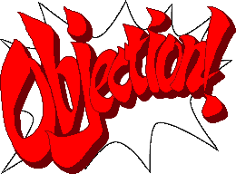
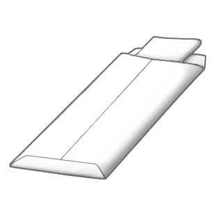

English
Literal Translation
Greek
Episode 1
Episode 1
Επεισόδιο 1
The First Turnabout
The First Overturning
Η Πρωτή Ανατροπή
*gasp*... *gasp*... Dammit! ...Why me? I can't get caught... Not like this! I-I've gotta find someone to pin this on... Someone like... him! I'll make it look like HE did it!
*ah*... *ah*... The Devil! ...Why me? I can't have them catch me... not like this! I need to find someone for me to blame for this... Someone like... him! I'll make it appear that it was done by HIM!
*αχ*... *αχ*... Διάολε! ...Γιατί μου; Δεν μπορώ να με πιάνουν... μη σαν αυτό! Π-Πρέπει να βρω κάποιον για να ενοχοποιήσω για αυτό... Κάποιον σαν... αυτόν! Θα το κάνω να φαίνεται ότι το έκανε ΑΥΤΌΣ!
August 3, 9:47 AM
District Court
Defendant Lobby No. 2
District Court
Defendant Lobby No. 2
August 3, 9:47 AM
District Court
Lobby of Defendants No. 2
District Court
Lobby of Defendants No. 2
3 Αυγούστου, 9:47 ΠΜ
Περιφερειακό Δικαστήριο
Αίθουσα Κατηγορούμενου Νο 2
Περιφερειακό Δικαστήριο
Αίθουσα Κατηγορούμενου Νο 2
Phoenix:
(Boy am I nervous!)
Phoenix:
(I'm so nervous!)
Φοίνιξ:
(Είμαι τόσο νευρικός!)
Mia: Wright!
Mia: Sostirios!
Μία: Σωστήρης!
Phoenix: Oh, h-hiya, Chief.
Phoenix: Oh, h-hey, Chief.
Φοίνιξ: Ω, γε-γεια, Αρχηγίνα.
Mia: Whew, I'm glad I made it on time. Well, I have to say Phoenix, I'm impressed! Not everyone takes on a murder trial right off the bat like this. It says a lot about you... and your client as well.
Mia: Phew, I'm glad that I came on time. Well, I have to say Phoenix, I'm impressed! Not takes on everyone a trial for murder right away like this. It says a lot about you... and your client, too.
Μία: Ουφ, χαίρομαι ότι ήρθα στην ώρα. Λοιπόν, πρέπει να πω Φοίνιξ, είμαι εντυπωσιασμένη! Δεν αναλαμβάνουν όλοι μια δίκη για φόνο αμέσως σαν αυτήν. Λέει πολλά για σένα... κι ο πελάτη σου επίσης.
Phoenix: Um... thanks. Actually, it's because I owe him a favor.
Phoenix: Uh... thanks. In fact, it's because I owe him a favor.
Φοίνιξ: Ε... ευχαριστώ. Στην πραγματικότητα, είναι επειδή τον χρωστάω μια χάρη.
Mia: A favor? You mean, you knew the defendant before this case?
Mia: A favor? You mean, you knew the defendant before this case?
Μία: Μια χάρη; Εννοείς ότι ήξερες ο κατηγορούμενος πριν από αυτήν την υπόθεση;
Phoenix: Yes. Actually, I kind of owe my current job to him. He's one of the reasons I became an attorney.
Phoenix: Yes. In fact, sort of I owe my current job to him. He's one of the reasons that I became a lawyer.
Φοίνιξ: Ναι. Στην πραγματικότητα, κάπως χρωστάω τη τωρινή μου δουλειά σε αυτόν. Είναι ένας από τους λόγους που έγινα δικηγόρος.
Mia: Well, that's news to me!
Mia: Well, that's news to me!
Μία: Λοιπόν, αυτό είναι νέα σε μένα!
Phoenix: I want to help him out any way I can! I just... really want to help him. I owe him that much.
Phoenix: I want to help him with any way I can! Simply... I want lots to help him. I owe him so much.
Φοίνιξ: Θέλω να τον βοηθήσω με όποιον τρόπο μπορώ! Απλώς... θελώ πολύ να τον βοηθήσω. Τον χρωστάω τόσο.
???: (It's over! My life, everything, it's all over!)
...: (It's done! I'm lost! My life, eveything, it's all finished!)
...: (Τελείωσε! Είμαι χαμένος! Η ζωή μου, τα πάντα, όλα τελείωσαν!)
Mia: ... Is that your client screaming over there?
Mia: ... Is that your client screaming there?
Μία: ... Είναι εκείνος ο πελάτης σου ουρλιαζώντας εκεί;
Phoenix: Yeah... it's him.
Phoenix: Yes... it's him.
Φοίνιξ: Ναι... είναι αυτό.
???: (Death! Despair! Ohhhh! I'm gonna do it, I'm gonna die!!!)
...: (Death! Anguish! Ohhhh! I will do it, I will die!)
...: (Θάνατος! Αγώνια! Ωχχχχ! Θα το κάνω, θα πεθάνω!)
Mia: It sounds like he wants to die...
Mia: It sounds like he wants to die...
Μία: Ακούγεται σαν να θέλει να πεθάνει...
Phoenix: Um, yeah. *sigh*
Phoenix: Uh, yes. *ah*
Φοίνιξ: Ε, ναι. *αχ*
Butz: Nick!!!
Dunnit: Nick!!!
Φταίχτης: Νίκο!!!
Phoenix: Hey. Hey there, Larry.
Phoenix: Hi. Hello, Larry.
Φοίνιξ: Γεια. Γεια σου, Λάρι.
Butz: Dude, I'm so guilty!! Tell them I'm guilty!!! Gimme the death sentence! I ain't afraid to die!
Dunnit: Man, I'm so guilty!! Tell them I'm guilty!!! Give me the death sentence! I'm not afraid to die!
Φταίχτης: Φίλε, είμαι τόσο ένοχος!! Πες τους ότι είμαι ένοχος!!! Δώσε μου τη θανατική ποινή! Δεν φοβάμαι να πεθάνω!
Phoenix: What!? What's wrong, Larry?
Phoenix: What?! What's up, Larry?
Φοίνιξ: Τι;! Τι τρέχει, Λάρι;
Butz: Oh, it's all over... I... I'm finished. Finished! I can't live in a world without her! I can't! Who... who took her away from me, Nick? Who did this!? Aww, Nick, ya gotta tell me! Who took my baby away!?
Dunnit: Oh, everything's finished... I... I'm lost. Lost! I can't live in a world without her! I can't! Who... who took her away from me, Nick? Who did this?! Ah, Nick, you have to tell me! Who took my baby away?
Φταίχτης: Ω, όλα τελείωσαν... ει... είμαι χαμένος. Χαμένος! Δεν μπορώ να ζήσω σε έναν κόσμο χωρίς αυτήν! Δεν μπορώ! Ποιος... ποιος την πήρε μακριά μου, Νίκο; Ποιος το έκανε αυτό;! Αχ, Νίκο, πρέπει να μου πεις! Ποιος πήρε το μωρό μου μακριά;
Phoenix: (Hmm... The person responsible for your girlfriend's death? The newspapers say it was you...)
Phoenix: (The person that is responsible for the death of your girlfriend? The newspapers say it was you...)
Φοίνιξ: (Το άτομο που ευθύνεται για το θάνατο της κοπέλας σου; Οι εφημερίδες λένε ότι ήσουν εσένα...)
Phoenix: My name is Phoenix Wright. Here's the story: My first case is a fairly simple one. A young woman was killed in her apartment. The guy they arrested was the unlucky sap dating her: Larry Butz... my best friend since grade school. Our school had a saying: "When something smells, it's usually the Butz." In the 23 years I've known him, it's usually been true. He has a knack for getting himself in trouble. One thing I can say though: it's usually not his fault. He just has terrible luck. But I know better than anyone, that he's a good guy at heart. That and I owe him one. Which is why I took the case... to clear his name. And that's just what I'm going to do!
Phoenix: My name is Phoenix Sostirios. Here is the story: The first case is a sufficiently simple one. A young woman died in her apartment. The guy that they arrested was the unlucky loser that was going out to her: Larry Dunnit... my best friend from elementary school. Our school had a saying: "When something, smells, usually it's Dunnit." In the 23 years that I know him, usually it's true. He has a talent for putting himself into trouble. I can say, though: It's not usually his own fault. Just he has awful luck. But I know better than anybody, that he's a good guy at heart. That, and I owe him one. For that is why I took this case... to absolve him of suspicion. And that precisely I'll do!
Φοίνιξ: Το όνομά μου είναι Φοίνιξ Σωστήρης. Εδώ είναι η ιστορία: H πρώτη υπόθεση είναι μια αρκετή απλή. Μια νεαρή γυναίκα πεθάνε στο διαμέρισμά της. Ο τύπος που συνέλαβαν ήταν ο δυστυχής χαμένος που της έβγαινε: Λάρι Φταίχτης... ο καλύτερος μου φίλος από το δημοτικό. Το σχολείο μας είχε ένα ρητό: «Όταν κάτι μυρίζει, συνήθως είναι ο Φταίχτης.» Στα 23 χρόνια που τον γνωρίζω, συνήθως ήταν αλήθεια. Έχει ένα ταλέντο για να βάζει τον εαυτό του σε μπελάς. Μπορώ να πω, όμως: Δεν είναι συνήθως δικό του λάθος. Απλώς έχει απαίσια τύχη. Αλλά ξέρω καλύτερα από οποιονδήποτε, ότι είναι καλός τύπος στην καρδιά. Αυτό, και του χρωστάω ένα. Γι' αυτό πήρα την υπόθεση... για να τον απαλλάξω από τις υποψίες. Και αυτό ακριβώς θα κάνω!
August 3, 10:00 AM
District Court
Courtroom No. 2
District Court
Courtroom No. 2
August 3, 10:00 AM
District Court
Hall of Court No. 2
District Court
Hall of Court No. 2
3 Αυγούστου, 10:00 ΠΜ
Περιφερειακό Δικαστήριο
Αίθουσα Δικαστήριου Νο 2
Περιφερειακό Δικαστήριο
Αίθουσα Δικαστήριου Νο 2
Judge: Court is now in session for the trial of Mr. Larry Butz.
Judge: The court is now in a meeting for the trial of sir Larry Dunnit.
Δικαστής: Το δικαστήριο είναι τώρα σε συνεδρίαση για τη δίκη του κύριου Λάρι Φτιάχτης.
Payne: The prosecution is ready, Your Honor.
Painful: The prosecution is ready, Mr. Judge.
Οδυνηρής: Η εισαγγελία είναι έτοιμη, κύριε Δικαστή.
Phoenix: The, um, defense is ready, Your Honor.
Phoenix: The, uh, defense is ready, Mr. Judge.
Φοίνιξ: Η, ε, υπεράσπιση είναι έτοιμη, κύριε Δικαστή.
Judge: Ahem. Mr. Wright? This is your first trial, is it not?
Judge: Ehm. Sir Sostirios? This is the first trial of yours, isn't it?
Δικαστής: Εχμ. Κύριο Σωστήρη; Αυτή είναι η πρώτη δίκη σας, δεν είναι;
Phoenix: Y-Yes, Your Honor. I'm, um, a little nervous.
Phoenix: Y-Yes, Mr. Judge. I'm, uh, a little nervous.
Φοίνιξ: Ν-Ναι, κύριε Δικαστή. Είμαι, ε, λίγο νευρικός.
Judge: Your conduct during this trial will decide the fate of your client. Murder is a serious charge. For your client's sake, I hope you can control your nerves.
Judge: Your behavior during this trial will determine the fate of your client. Murder is a serious charge. For the sake of your client, I hope that you can handle your nerves.
Δικαστής: Η συμπεριφορά σου κατά αυτή τη δίκη θα καθορίσει η μοίρα του πελάτη σας. Ο φόνος είναι σοβαρή κατηγορία. Για η χάρη του πελάτη σας, ελπίζω ότι μπορέσεις να διαχειριστείς τα νεύρα σας.
Phoenix: Thank... thank you, Your Honor.
Phoenix: Th... thank you, Mr. Judge.
Φοίνιξ: Ευ... Σε ευχαριστώ, κύριε Δικαστή.
Judge: ... Mr. Wright, given the circumstances... I think we should have a test to ascertain your readiness.
Judge: ... Sir Sostirios, given the circumstances... I think that we should do a test to determine your readiness.
Δικαστής: ... Κύριο Σωστήρη, δεδομένων των περιστάσεων... νομίζω ότι πρέπει να κάνουμε μια δοκιμή για διαπιστώσουμε την ετοιμότητά σας.
Phoenix: Yes, Your Honor. (Gulp... Hands shaking... Eyesight... fading...)
Phoenix: Yes, Your Honor. (Gulp... my hands are shaking... vision... disappearing...)
Φοίνιξ: Ναι, Mr. Judge. (Γουλπ... χέρια μου τρέμουν... όραση... εξαφανίζονται...)
Judge: This test will consist of a few simple questions. Answer them clearly and concisely. Please state the name of the defendant in this case.
Judge: This test will consist of a few simple questions. Answer them clearly and concisely. Please declare the name of the defendant of this case.
Δικαστής: Αυτή η δοκιμή θα αποτελείται από μερικές απλές ερωτήσεις. Απάντησε τις ξεκάθαρα και συνοπτικά. Παρακαλώ δηλώστε το όνομα του κατηγορούμενου αυτής της υπόθεσης.
Phoenix Wright
Phoenix Sostirios
Φοίνιξ Σωστήρης
Phoenix: Um... the defendant... is me... right?
Phoenix: Uh... the defendant... is I... correct?
Φοίνιξ: Ε... ο κατηγορούμενος... είναι εγώ... σωστά;
Mia: Wright! Have you completely lost your mind? Focus! The defendant is the person on trial! You're his lawyer!
Mia: Sostirios! Have you lost completely your mind? Concentrate! The defendant is the person that's on trial! You're his lawyer!
Μία: Σωστήρη! Έχεις χάσει τελείως το μύαλο σου; Συγκεντρώνομαι! Ο κατηγορούμενος είναι το άτομο που δικάζεται! Είσαι δικηγόρος του!
Phoenix: Um, er, eh? Oh yeah, right! Eh heh heh.
Phoenix: Ah, uh... uh? Ah yes, right! Hahaha.
Φοίνιξ: Α, ε... ε; Α ναι, σώστος! Χαχαχα.
Mia: This is no laughing matter! You did pass the bar, didn't you?
Mia: This is not a matter for laughing! You passed the Tests of Lawyers, is it not like that?
Μία: Αυτό δεν είναι θέμα για γέλια! Πέρασες οι Εξετάσεις Δικηγορίας, έτσι δεν είναι;
Judge: Sorry, I couldn't hear your answer. I'll ask once more:
Judge: Sorry, I couldn't hear your answer. I will ask another time:
Δικαστής: Συγγνώμη, δεν μπορούσα να ακούω την απάντησή σας. Θα ρωτήσω άλλη μια φορά:
Larry Butz
Larry Dunnit
Λάρι Φτιάχτης
Mia Fey
Mia Fey
Μία Φαι
Phoenix: The, um, defendant? That's... er... Mia Fey?
Phoenix: The, uh, defendant? It's... uh... Mia Fey?
Φοίνιξ: Ο, ε, κατηγορούμενος; Είναι... ε... Μία Φαι;
Mia: Wrong, Wright. Look, I have to leave. I have to go home. I'm... I'm expecting a delivery.
Mia: Wrong, Sostirios. Look, I need to go. I need to go home. I'm... I'm waiting for a delivery.
Μία: Λάθος, Σωστήρη. Κοίτα, πρέπει να φύγω. Πρέπει να πάω σπίτι. Εγώ... περιμένω παράδοση.
Phoenix: Aw, c'mon Chief. There's no need to be going so soon, is there?
Phoenix: Ah, come on, Chief. There's not a need for you to leave so soon, is there?
Φοίνιξ: Α, έλα Αρχηγίνα. Δεν υπάρχει ανάγκη για να φύγεις τόσο σύντομα, υπάρχει;
Mia: Listen, Wright! The defendant is the one on trial--your client! I mean, that's about as basic as you can get!
Mia: Listen, Sostirios! The defendant is this one that's on trial-- your client! I mean, this is as basic as you can!
Μία: Άκου, Σωστήρη! Ο κατηγορούμενος είναι αυτός που δικάζεται-- ο πελάτης σου! Εννοώ, αυτό είναι τόσο βασικό όσο μπορείς!
Phoenix: (I've put my foot in it this time! I've got to relax!)
Phoenix: (I have put my foot in it this time! I need to relax!)
Φοίνιξ: (Έχω βάλει το πόδι μου μέσα το αυτή τη φορά! Πρέπει να χαλαρώνω!)
Judge: Sorry, I couldn't hear your answer. I'll ask once more:
Judge: Sorry, I couldn't hear your answer. I will ask another time:
Δικαστής: Συγγνώμη, δεν μπορούσα να ακούω την απάντησή σας. Θα ρωτήσω άλλη μια φορά:
Phoenix: The defendant? Well, that's Larry Butz, Your Honor.
Phoenix: The defendant? Well, it's Larry Dunnit, Mr. Judge.
Φοίνιξ: Ο κατηγορούμενος; Λοιπόν, είναι Λάρι Φταίχτης, κύριε Δικαστή.
Judge: Correct. Just keep your wits about you and you'll do fine. Next question: This is a murder trial. Tell me, what's the victim's name?
Judge: Right. Just keep your mind close and you'll be a pleasure. Next question: This is a trial for murder. Tell me, what is the name of the victim?
Δικαστής: Σωστός. Απλά κράτησε το μυάλο σας κοντά και θα είσαι μια χαρά. Επόμενη ερώτηση: Αυτή είναι μια δίκη για φόνο. Πες μου, ποιο είναι το όνομα του θύματος;
Phoenix: (Whew, I know this one! Glad I read the case report cover to cover so many times. It's... wait... Uh-oh! No... no way! I forgot! I'm drawing a total blank here!)
Phoenix: (Phew, I know this! I'm glad that I read the report for the case so many times. It's... wait... oh! No... no! I forgot it! I have a complete blank memory here!)
Φοίνιξ: (Ουφ, το ξέρω αυτό! Χαίρομαι που διάβασα την αναφορά της υπόθεσης τόσες φόρες. Είναι... περίμενε... ωχ! Όχι... όχι! Το ξέχασα! Έχω ένα πλήρες κενό μνήμης εδώ!)
Mia: Phoenix! Are you absolutely SURE you're up to this? You don't even know the victim's name!?
Mia: Phoenix! Are you absolutely SURE that you can do this? You don't know even the name of the victim?!
Μία: Φοίνιξ! Είσαι απολύτως ΣΊΓΟΥΡΟΣ ότι μπορείς να το κάνεις αυτό; Δεν ξέρεις καν το όνομα του θύματος;!
Phoenix: Oh, the victim! O-Of course I know the victim's name! I, um, just forgot. ...Temporarily
Phoenix: Oh, the victim! Oh-of course I know the name of the victim! Just... uh... I forgot it. ...Temporarily
Φοίνιξ: Ωχ, το θύμα! O-Φυσικά και ξέρω το όνομα του θύματος! Απλά... ε... το ξέχασα. ...Προσωρινά
Mia: I think I feel a migraine coming on. Look, the victim's name is listed in the Court Record. Just press [the R Button / Tab] to check it at any time, okay? Remember to check it often. Do it for me, please. I'm begging you.
Mia: I think that I feel a migraine presenting itself. Look, the name of the victim is written in the Court Record. Simply press [the button R / Tab] for you to check it at any moment, okay? Remember to check it often. Do it for me, please. I am begging you.
Μία: Νομίζω ότι νιώθω μια ημικρανία εμφανίζεται. Κοίτα, το όνομα του θύματος είναι αναγράφεται στο Δικαστικό Αρχείο. Απλώς πάτησε [το κουμπί R / Tab] για να το ελέγξεις άνα πάσα στιγμή, εντάξει; Θυμήσου να το ελέγξεις συχνά. Κάνε το για μένα, παρακαλώ. Σε ικετεύω.
Judge: Mr. Wright. Who is the victim in this case?
Judge: Sir Sostirios. Who is the victim in this case?
Δικαστής: Κύριο Σωστήρη. Ποιο είναι το θύμα σε αυτή την υπόθεση;
Mia Fey
Mia Fey
Μία Φαι
Phoenix: Um... Mia Fey?
Phoenix: Uh... Mia Fey?
Φοίνιξ: Ε... Μία Φαι;
Mia: W-W-What!? How can I be the victim!?
Mia: W-W-What?! How can I be the victim?!
Μία: Μ-Μ-Μα τι;! Πως μπορώ να είμαι το θύμα;!
Phoenix: Oh! Right! Sorry! I, er, it was the first name that popped into my head, and--
Phoenix: Oh! Right! Excuse me! I, uh, it was the first name that was shown in my head, and--
Φοίνιξ: Ω! Σωστά! Συγγνώμη! Εγώ, ε, ήταν το πρώτο όνομα που εμφανίστηκε στο κεφάλι μου, και--
Mia: The Court Record button! Remember to use it when you're in a pinch with [the R Button / Tab].
Mia: The button of the Court Record! Remember to use it when you're in trouble with [the button R / Tab].
Μία: Το κουμπί Δικαστικού Αρχείου! Θυμήσου να το χρησιμοποιώ όταν είσαι σε μπελάδες με [το κουμπί R / Tab].
Judge: Let me ask that one again:
Judge: Let me ask it again:
Δικαστής: Να το ρωτήσω ξανά:
Cinder Block
Mobile Stone
Κινητό Πέτρα
Phoenix: Oh, um, wasn't it Ms. Block? Ms. Cinder Block?
Phoenix: Ah, uh, wasn't it Ms. Stone? Ms. Mobile Stone?
Φοίνιξ: Α, ε, δεν ήταν η κυρία Πέτρα; Κυρία Κινητό Πέτρα;
Judge: The person in question was a victim of murder, not ill-conceived naming, Mr. Wright.
Judge: The victim in question was victim of murder, not a bad naming, Mr. Sostirios.
Δικαστής: Το θύμα σε λόγω ήταν θύμα φόνου, όχι μια κακή ονομασίας, κύριε Σωστήρη.
Mia: Wright? If you forget something, use [the R Button / Tab] to check the Court Record and jog your memory. A mistake in court could cost you the case.
Mia: Sostirios? If you forget something, use [the button R / Tab] to check the Court Record and shake your memory. A mistake in court will be able to lose you the case.
Μία: Σωστήρη; Αν ξεχνάς κάτι, χρησιμοποίησε [το κουμπί R / Tab] για να ελέγξεις το Δικαστικό Αρχείο και κουνάς τη μνήση σου. Ένα λάθος στο δικαστήριο θα μπορείς να σου χάνει την υπόθεση.
Judge: I'll ask you again:
Judge: I will ask you again:
Δικαστής: Θα σε ρώτησω ξανά:
Cindy Stone
Cynthia Peterson
Κύνθια Πετρίδης
Phoenix: Um... the victim's name is Cindy Stone.
Phoenix: Uh... the name of the victim is Cynthia Peterson.
Φοίνιξ: Ε... το όνομα του θύματος είναι Κύνθια Πετρίδης.
Judge: Correct. Now, tell me, what was the cause of death? She died because she was...?
Judge: Right. Now, tell me, what was the cause of the death? She died due to...?
Δικαστής: Σωστός. Τώρα, πες μου, τι ήταν η αιτία του θανάτου; Πέθανε λόγω...;
Poisoned
Poison
Δηλητήριο
Phoenix: Oh, right! Wasn't she, um, poisoned by er... poison?
Phoenix: Ah, right! Uh, she was poisoned by uh... poison?
Φοίνιξ: Α, σωστά! Ε, δηλητριάστηκε από ε... δηλητήριο;
Judge: You're asking me!?
Judge: You're asking me?!
Δικαστής: Με ρωτάς;!
Phoenix: Um... Chief! Help me out!
Phoenix: Uh... Chief! Help me!
Φοίνιξ: Ε... Αρχηγίνα! Βοήθησε με!
Mia: Check the court record. [The R Button / Tab]... remember?
Mia: Check the court record. [The button R / Tab]... do you remember?
Μία: Έλεγξε το δικαστικό αρχείο. [Το κουμπί R / Tab]... θυμάσαι;
Phoenix: (Geez. Give a guy a break!)
Phoenix: (Mercy. Give me a break!)
Φοίνιξ: (Έλεος. Δώσε μου ένα διάλειμμα!)
Judge: Let me ask again.
Judge: Let me ask again.
Δικαστής: Να ρωτήσω ξανά.
Hit with a blunt object
Blunt object
Αμβλύ αντικείμενο
Strangled
Strangulation
Στραγγαλισμός
Phoenix: Right... she was strangled, wasn't she?
Phoenix: Right... she was strangled, is it not like that?
Φοίνιξ: Σωστά... στραγγαλίστηκε, έτσι δεν είναι;
Mia: Please tell me that was you talking to yourself.
Mia: Please tell me that that was you talking to yourself.
Μία: Παρακαλώ πες μου ότι αυτό ήταν να μιλούσες στον εαυτό σου.
Judge: If you wish to hang yourself, Mr. Wright, you're welcome to, but not inside my courtroom. I suppose there's nothing to do but give you another try:
Judge: If you want to hang yourself, Mr. Sostirios, you can, but not in my hall of court. I suppose that there isn't anything for me to do but to give you another attempt:
Δικαστής: Αν θέλεις να κρεμάσεις τον εαυτό σου, κύριε Σωστήρη, μπορείς, αλλά όχι μέσα στην αίθουσα του δικαστηρίου μου. Υποθέτω ότι δεν υπάρχει τίποτα να κάνω από το να σου δώσω άλλη μια προσπάθεια:
Phoenix: She was struck once, by a blunt object.
Phoenix: She was struck one time, by a blunt object.
Φοίνιξ: Χτυπήθηκε μια φορά, από ένα αμβλύ αντικείμενο.
Judge: Correct. You've answered all my questions. I see no reason why we shouldn't proceed. You seem much more relaxed, Mr. Wright. Good for you.
Judge: Right. You answered all my questions. I don't see any reason to not continue. You look a lot more relaxed, Mr. Sostirios. Bravo you.
Δικαστής: Σωστά. Απάντησες όλες τις ερώτησεις μου. Δεν βλέπω κανένα λόγο να μην προχωρήσουμε. Φαίνεσαι πολύ πιο χαλαρός, κύριε Σωστήρη. Μπράβο σου.
Phoenix: Thank you, Your Honor. (Because I don't FEEL relaxed, that's for sure.)
Phoenix: Thank you, Mr. Judge. (Because I don't FEEL relaxed, that is certain.)
Φοίνιξ: Ευχαριστώ, κύριε Δικαστή. (Γιατί δεν ΝΙΏΘΩ χαλαρός, αυτό είναι σίγουρο.)
Judge: Well, then... First, a question for the prosecution. Mr. Payne?
Judge: Well, then... First, a question for the prosecution. Mr. Painful?
Δικαστής: Καλά, τότε... Πρώτα, μια ερώτηση για την εισαγγελία. Κύριε Οδυνηρή;
Payne: Yes, Your Honor?
Painful: Yes, Mr. Judge?
Οδυνηρής: Ναι, κύριε Δικαστή;
Judge: As Mr. Wright just told us, the victim was struck with a blunt object. Would you explain to the court just what that "object" was?
Judge: As the Mr. Sostirios just told us, the victim was struck by a blunt object. Will you explain to the court what exactly was this "object"?
Δικαστής: Όπως ο κ. Σωστήρης μόλις μας είπε, το θύμα χτυπήθηκε από ένα αμβλύ αντικείμενο. Θα εξηγούσες στο δικαστήριο τι ακριβώς ήταν αυτο το «αντικείμενο»;
Payne: The murder weapon was this statue of "The Thinker." It was found lying on the floor, next to the victim.
Judge: The weapon of the murder was this statue of "The Thinker". It was found lying on the floor, next to the victim.
Οδυνηρής: Το όπλο του φόνου ήταν αυτό το άγαλμα του «Ο Σκεπτόμενος». Βρέθηκε ξαπλωμένος στο πάτωμα, δίπλα στο θύμα.
Judge: I see... The court accepts it into evidence.
Judge: I understand... The court accepts it as an evidence piece.
Δικαστής: Καταλαβαίνω...Το δικαστήριο το δέχεται ως αποδεικτικό στοιχείο.
Statue added to the Court Record.
Statue added to the Court Record.
Άγαλμα προστίθεται στο Δικαστικό Αρχείο.
Mia: Wright... Be sure to pay attention to any evidence added during the trial. That evidence is the only ammunition you have in court. [Touch the Court Record button / Use the R Button] to check the Court Record frequently.
Mia: Sostirios... take care to give attention to every evidence piece that is added during the duration of the trial. These pieces are the only evidence that you have in the court. [Touch the button of the Court Record / use the button R] for you to check the Court Record often.
Μία: Σωστήρη... Φρόντισε να δώσεις προσοχή σε κάθε αποδεικτικό στοιχείο που προστίθεται κατά τη διάρκεια της δίκης. Αυτά τα στοιχεία είναι το μόνο πυρομαχικό που έχεις στο δικαστήριο. [Άγγιξε το κουμπί Δικαστικού Αρχείου / χρησιμοποίησε το κουμπί R] για να ελέγξεις το Δικαστικό Αρχείο συχνά.
Judge: Mr. Payne, the prosecution may call its first witness.
Judge: Mr. Painful, the prosecution can call its first witness.
Δικαστής: Κύριε Οδυνηρή, η εισαγγελία μπορεί να καλέσει τον πρώτο της μάρτυρα.
Payne: The prosecution calls the defendant, Mr. Butz, to the stand.
Phoenix: The prosecution calls the defendant, Mr. Dunnit, to the platform.
Οδυνηρής: Η εισαγγελία καλεί τον κατηγορούμενο, τον κύριο Φτιάχτης, στο βήμα.
Phoenix: Um, Chief, what do I do now?
Phoenix: Uh, Chief, what am I doing now?
Φοίνιξ: Ε, Αρχηγίνα, τι κάνω τώρα;
Mia: Pay attention. You don't want to miss any information that might help your client's case. You'll get your chance to respond to the prosecution later, so be ready! Let's just hope he doesn't say anything... unfortunate.
Mia: Give attention. You don't want to lose any information which can help the defense of your client. You will have your opportunity to respond to the prosecution later, so you be ready! Let's hope that he will not say anything... unlucky.
Μία: Δώσε προσοχή. Δεν θέλεις να χάσεις καμία πληροφορία που μπορεί να βοηθήσει στην υπεράσπιση του πελάτη σου. Θα έχεις την ευκαιρία σου να απαντήσεις στην εισαγγελία αργότερα, οπότε να είσαι έτοιμος! Ας ελπίσουμε ότι δεν θα πεις τίποτα... άτυχο.
Phoenix: (Uh oh, Larry gets excited easily... This could be bad.)
Phoenix: (Oh, Larry gets excited easily... This can be bad.)
Φοίνιξ: (Ωχ, ο Λάρι ενθουσιάζεται εύκολα... Αυτό μπορεί να είναι κακό.)
Payne: Ahem. Mr. Butz. Is it not true that the victim had recently dumped you?
Painful: Ahem. Mr. Dunnit. Is it not true that you were thrown away recently by the victim?
Οδυνηρής: Αχαμ. Κύριε Φταίχτη. Δεν είναι αλήθεια ότι σε πέταξαν πρόσφατα από το θύμα;
Butz: Hey, watch it buddy! We were great together! We were Romeo and Juliet, Cleopatra and Mark Anthony!
Dunnit: Hey! Stop it buddy! We were wonderful together! We were Romeo and Juliet, Cleopatra and Mark Antony!
Φταίχτης: Έι! Σταμάτα φίλε! Ήμασταν υπέροχα μαζί! Ήμασταν Ρωμαίος και Ιουλιέτα, Κλεοπάτρα και Μάρκος Αντώνιος!
Phoenix: (Um... didn't they all die?)
Phoenix: (Uh... didn't they die all of them?)
Φοίνιξ: (Ε... δεν πέθανον όλοι;)
Butz: I wasn't dumped! She just wasn't taking my phone calls. Or seeing me... Ever. WHAT'S IT TO YOU, ANYWAY!?
Dunnit: I wasn't thrown away! Simply she wasn't accepting my phone calls. Nor seeing me... ever. WHAT DO YOU CARE, ONE WAY OR ANOTHER?
Φταίχτης: Δεν με πέταξαν! Απλώς δεν δεχόταν τα τηλεφωνήματά μου. Ή με έβλεπε... ποτέ. ΤΙ ΣΕ ΝΟΙΆΖΕΙ ΕΣΈΝΑ, ΈΤΣΙ ΚΙ ΑΛΛΙΏΣ;
Payne: Mr. Butz, what you describe is generally what we mean by "dumped." In fact, she had completely abandoned you... and was seeing other men! She had just returned from overseas with one of them the day before the murder!
Painful: Mr. Dunnit, this that you describe is usually that which we mean by the term "You were thrown away." In fact, you she had abandoned completely... and she was seeing other men! She just returned from abroad with one of those the day before the murder!
Οδυνηρής: Κύριε Φταίχτη, αυτό που επεριγράφεις είναι συνήθως αυτό που εννοούμε με τον όρο «σε πετάξαν». Στην πραγματικότητα, σε είχε εγκαταλείψει τελείως... και έβλεπε άλλους άνδρες! Επέστρεψε μόλις από εξωτερικό με ενάν από αυτούς την ημέρα πριν τον φόνο!
Butz: Whaddya mean, "one of them"!? Lies! All of it, lies! I don't believe a word of it!
Dunnit: What do you mean, "one of those"?! Lies! All of this, lies! I don't believe a single word!
Φταίχτης: Τι εννοείς, «ενάν από αυτούς»;! Ψέματα! Όλα αυτά, ψέματα! Δεν πιστεύω ούτε λέξη!
Payne: Your Honor, the victim's passport. According to this, she was in Paris until the day before she died.
Painful: Mr. Judge, the passport of the victim. This agrees, she was in Paris until the day before she died.
Οδυνηρής: Κύριε Δικαστή, το διαβατήριο του θύματος. Σύμφωνα αυτό, ήταν στο Παρίσι μέχρι την μέρα πριν πεθάνει.
Passport added to the Court Record.
Passport added to the Court Record.
Διαβατήριο προστίθεται στο Δικαστικό Αρχείο.
Judge: Hmm... Indeed, she appears to have returned the day before the murder.
Judge: Hmm... Indeed, she appears that she had returned the day before the murder.
Δικαστής: Χμ... Πράγματι, φαίνεται ότι είχε επιστρέψει την μέρα πριν τον φόνο.
Butz: Dude... no way...
Dunnit: Hey... with nothing...
Φταίχτης: Ρε... με τίποτα...
Payne: The victim was a model, but did not have a large income. It appears that she had several "Sugar Daddies."
Painful: The victim was a model, but she did not have a large income. It seems that she had several "sugardaddies."
Οδυνηρής: Το θύμα ήταν μοντέλο, αλλά δεν είχε μεγάλο εισόδημα. Φαίνεται ότι είχε αρκετά «ζαχαρομπαμπάδες».
Butz: Daddies? Sugar?
Dunnit: Daddies? Sugar?
Φταίχτης: Μπαμπάδες; Ζάχαρη;
Payne: Yes. Older men, who gave her money and gifts. She took their money and used it to support her lifestyle.
Painful: Yes. Mature men, that gave her money and gifts. She took their money and used them for supporting her way of life.
Οδυνηρής: Ναι. Ώριμοι άνδρες, που της έδιναν λεφτά και δώρα. Πήρε τα λεφτά τους και τα χρησιμοποίησε για να στηρίξει τον τρόπο ζωής της.
Butz: Duuude!
Dunnit: Duuude!
Φταίχτης: Φίλεεε!
Payne: We can clearly see what kind of woman this Ms. Stone was. Tell me, Mr. Butz, what do you think of her now?
Painful: We can see clearly what type of woman this Ms. Peterson was. Tell me, Mr. Dunnit, what opinion do you have for her now?
Οδυνηρής: Μπορούμε να δούμε ξεκάθαρα τι τύπος γυναίκας αυτή η κυρία Πετρίδης ήταν. Πες μου, κύριε Φταίχτη, τι γνώμη εχείς για αυτήν τώρα;
Mia: Wright... I don't think you want him to answer that question.
Mia: Sostirios... I don't think that you want him to answer that question.
Μία: Σωστήρη... δεν νομίζω ότι θέλεις να απαντήσει σε αυτή τη ερώτηση.
Phoenix: (Yeah... Larry has a way of running his mouth in all the wrong directions. Should I...?)
Phoenix: (He has a way to say the wrong things at the wrong time. To...?)
Φοίνιξ: (Έχει έναν τρόπο να λέει τα λάθος πράγματα τη λάθος στιγμή. Να...;)
Wait and see what happens
Wait and see what will become
Περιμένω να δω τι θα γίνει
Phoenix: (Might be better not to get involved in this one...)
Phoenix: (Maybe it is better to not be influencing with this one...)
Φοίνιξ: (Ίσως είναι καλυτέρα να μην επιδράσω με αυτό...)
Payne: Well, Mr. Butz?
Painful: So, Mr. Dunnit?
Οδυνηρής: Λοιπόν, κύριε Φταίχτη;
Butz: Dude, no way! That cheatin' she-dog!
Dunnit: Dude, with nothing! This unfaithful bitch!
Φταίχτης: Φίλε, με τίποτα! Αυτή η άπιστη σκύλα!
Stop him from answering
Stop him answering
Τον σταματήσω να απαντήσει
Phoenix: My client had no idea the victim was seeing other men! That question is irrelevant to this case!
Phoenix: My client did not have an idea that the victim was seeing other men! This question is irrelevant for this case!
Φοίνιξ: Ο πελάτης μου δεν είχε ιδέα ότι το θύμα έβγαινε άλλους άνδρες! Αυτή η ερώτηση είναι άσχετη για αυτή την υπόθεση!
Payne: Oof! *wince*
Painful: Oof! *grimace*
Οδυνηρής: Ουφ! *γκριμάτσα*
Butz: Dude! Nick! Whaddya mean, "irrelevant"!? That cheatin' she-dog!
Dunnit: Hey! Nick! What do you mean, "irrelevant"?! This unfaithful bitch!
Φταίχτης: Ρε! Νίκο! Τι εννοείς, «άσχετη»;! Αυτή η άπιστη σκύλα!
Butz: I'm gonna die. I'm just gonna drop dead! Yeah, and when I meet her in the afterlife... I'm going to get to the bottom of this!
Dunnit: I will die. Simply I will die! Yes, and when I meet her in the after-death life... I will arrive at the bottom of this!
Φταίχτης: Θα πεθάνω. Απλώς θα πεθάνω! Ναι, και όταν τη συναντήσω στη μεταθανάτια ζωή... θα φτάσω στην ουσία αυτού!
Judge: Let's continue with the trial, shall we?
Judge: Let's continue with the trial, like this?
Δικαστής: Ας συνεχίσουμε με τη δίκη, έτσι;
Payne: I believe the accused's motive is clear to everyone.
Painful: I believe that the motive of the defendant is clear to everyone.
Οδυνηρής: Πιστεύω ότι το κίνητρο του κατηγορουμένου είναι ξεκάθαρο σε όλους.
Judge: Yes, quite.
Judge: Yes, truly.
Δικαστής: Ναι, όντως.
Phoenix: (Oh boy. This is so not looking good.)
Phoenix: (Oh man. This does not seem good.)
Φοίνιξ: (Αμάν. Αυτό δεν φαίνεται καλό.)
Payne: Next question! You went to the victim's apartment on the day of the murder, did you not?
Painful: Next question! You went to the house of the victim on the day of the murder, is it not like this?
Οδυνηρής: Επόμενη ερώτηση! Πήγες στο σπίτι του θύμα την ημέρα του φόνου, έτσι δεν είναι;
Butz: Gulp!
Dunnit: Gulp!
Φταίχτης: Γουλπ!
Payne: Well, did you, or did you not?
Painful: Well then, did you do it, or not?
Οδυνηρής: Λοιπόν, το έκανες, ή όχι;
Butz: Heh? Heh heh. Well, maybe I did, and maybe I didn't!
Dunnit: Heh? Heh heh. Well then, maybe I did it, maybe I didn't do it!
Φταίχτης: Χε; Χε χε. Λοιπόν, ίσως το έκανα, ίσως δεν το έκανα!
Phoenix: (Uh oh. He went. What do I do?)
Phoenix: (Oh. He went. What should I do?)
Φοίνιξ: (Ωχ. Πήγε. Τι να κάνω;)
Have him answer honestly
I make him answer honestly
Βάλω τον να απαντήσει ειλικρινά
Phoenix: (I know! I'll send him a signal...)
Phoenix: (I know! I will send him a signal...)
Φοίνιξ: (Ξέρω! Θα του στείλω ένα σήμα...)
(TELL THE TRUTH)
(TELL THE TRUTH)
(ΠΕΣ Η ΑΛΉΘΕΙΑ)
Butz: Er... Yeah! Yeah! I was there! I went!
Dunnit: Uh... Yes! Yes! I was there! I went!
Φταίχτης: Ε... Ναι! Ναι! Ήμουν εκεί! Πήγα!
Judge: Order! Well, Mr. Butz?
Judge: Order! Well then, Mr. Dunnit?
Δικαστής: Τάξη! Λοιπόν, κύριε Φταίχτη;
Butz: Dude, chill! She wasn't home, man... So, like, I didn't see her.
Dunnit: Hey, calm down! She wasn't home, dude... so, you know, I didn't see her.
Φταίχτης: Ρε, ηρέμησε! Δεν ήταν σπίτι, φίλε... οπότε, ξερείς, δεν την είδα.
Payne:
Painful:
Οδυνηρής:

Payne: Your Honor, the defendant is lying.
Painful: Mr. Judge, the defendant tells lies.
Οδυνηρής: Κύριε Δικαστή, ο κατηγορούμενος ψεύδεται.
Judge: Lying?
Judge: He tells lies?
Δικαστής: Λέει ψέματα;
Payne: The prosecution would like to call a witness who can prove Mr. Butz is lying.
Painful: The prosecution will like to call a witness that can prove that Mr. Dunnit is lying.
Οδυνηρής: Η εισαγγελία θα ήθελε να καλέσει έναν μάρτυρα που μπορεί να αποδείξει ότι ο κύριος Φταίχτης ψεύδεται.
Stop him from answering
I stop him answering
Σταματάω να απάντησει
Phoenix: (I'll send him a signal...)
Phoenix: (I will send him a signal...)
Φοίνιξ: (Θα του στείλω ένα σήμα...)
(LIE LIKE A DOG)
(TELL LIES LIKE A DOG)
(ΠΕΣ ΨΈΜΑΤΑ ΣΑΝ ΣΚΎΛΟ)
Butz: Um, well, see, it's like this: I don't remember.
Dunnit: Uh, well then, it's like this: I don't remember.
Φταίχτης: Ε, λοιπόν, είναι σαν έτσι: δεν θυμάμαι.
Payne: You "don't remember"? Well then, we'll just have to remind you!
Painful: "You don't remember"? Well then, simply we should remind you!
Οδυνηρής: «Δεν θυμάσαι»; Λοιπόν, απλώς θα πρέπει να σου θυμίσουμε!
Phoenix: (I got a bad feeling about this...)
Phoenix: (I have a bad premonition of this...)
Φοίνιξ: (Έχω ένα κακό προαίσθημα για αυτό...)
Payne: We have a witness that can prove he DID go to the victim's apartment that day!
Painful: We have a wtiness that can prove that TRULY he went to the apartment of the victim that day!
Οδυνηρής: Έχουμε έναν μάρτυρα που μπορεί να αποδείξει ότι ΌΝΤΩΣ πήγε το διαμέρισμα του θύματος εκείνη την ημέρα!
Judge: Well, that simplifies matters. Who is your witness?
Judge: Well then, this simplifies things. Who is your witness?
Δικαστής: Λοιπόν, αυτό απλοποιεί τα πράγματα. Ποιος είναι ο μαρτύρας σας;
Payne: The man who found the victim's body. Just before making the gruesome discovery... He saw the defendant fleeing the scene of the crime!
Painful: The man that found the body of the victim. Just before he had made the gruesome discovery... he saw the defendant as he was fleeing from the scene of the crime!
Οδυνηρής: Ο άνδρας που βρήκε το πτώμα του θύματος. Μόλις πριν είχε κάνει τη φρικιαστική ανακάλυψη... είδε τον κατηγορούμενο να φεύγει από τον τόπο του εγκλήματος!
Judge: Order! Order in the court! Mr. Payne, the prosecution may call its witness.
Judge: Order! Order in the court! Mr. Painful, the prosecution may call its witness.
Δικαστής: Τάξη! Τάξη στο δικαστήριο! Κύριε Οδυνηρής, η εισαγγελία μπορεί να καλέσαι τον μαρτύρα της.
Payne: Yes, Your Honor.
Painful: Yes, Mr. Judge.
Οδυνηρής: Ναι, κύριε Δικαστή.
Phoenix: (This is bad...)
Phoenix: (This is bad...)
Φοίνιξ: (Αυτό είναι κακό...)
Payne: On the day of the murder, my witness was selling newspapers at the victim's building. Please bring Mr. Frank Sahwit to the stand!
Painful: On the day of the murder, my witness was selling newspapers in the building of the victim. Please bring Mr. Frank Idas to the stand!
Οδυνηρής: Την ημέρα του φόνου, ο μαρτύρας μου πουλούσε εφημερίδες στο κτήριο του θύματος. Παρακαλώ φέρτε τον κύριο Φρανκ Ίδα στο βήμα!
Payne: Mr. Sahwit, you sell newspaper subscriptions, is this correct?
Painful: Mr. Idas, you sell subscriptions of newspapers, is it correct?
Οδυνηρής: Κύριε Ίδα, πουλάτε συνδρομές εφημερίδων, είναι σωστό;
Sahwit: Oh, oh yes! Newspapers, yes!
Idas: Oh, oh yes! Newspapers, yes!
Ίδας: Ω, ω ναι! Εφημερίδες, ναι!
Judge: Mr. Sahwit, you may proceed with your testimony. Please tell the court what you saw on the day of the murder.
Judge: Mr. Idas, you can proceed with your testimony. Please tell the court what you saw on the day of the murder.
Δικαστής: Κύριε Ίδα, μπορείτε να προχωρήσετε με κατάθεσή σας. Παρακαλώ πείτε το δικαστήριο τι είδατε την ημέρα του φόνου.
Witness Testimony
Testimony of Witness
Κατάθεσή Μαρτύρα
-- Witness's Account --
-- Account of Witness --
-- Αναφορά Μαρτύρα --
Sahwit:
Idas:
Ίδας:
I was going door-to-door, selling subscriptions when I saw a man fleeing an apartment.
I was going from door to door, while selling subscriptions when I saw a man that is running from an apartment.
Πήγαινα από πόρτα σε πόρτα, πουλώντας συνδρομές όταν είδα έναν άνδρα να τρέχει από ένα διαμέρισμα.
I thought he must be in a hurry because he left the door half-open behind him.
I thought that he was hurrying because he left the door half-open behind him.
Νόμισα ότι βιαζόταν γιατί άφησε την πόρτα μισάνοιχτη πίσω του.
Thinking it strange, I looked inside the apartment.
Thinking that it was strange, I looked inside the apartment.
Νομίζοντας ότι ήταν παράξενος, κοίταξα μέσα στο διαμέρισμα.
Then I saw her lying there... A woman... not moving... dead!
Then I saw her lying down there... A woman... that was not moving... dead!
Μετά τη βρήκα ξαπλωμένη εκεί... Μια γυναίκα... που δεν κινούνταν... νεκρή!
I quailed in fright and found myself unable to go inside.
I was scared too much to go inside.
Φοβόμουν πάρα πολύ για να μπω μέσα.
I thought to call the police immediately!
I thought to call immediately the police!
Σκέφτηκα να καλέσω αμέσως την αστυνομία!
However, the phone in her apartment wasn't working.
However, the telephone in her apartment wasn't functioning.
Ωστόσο, το τηλέφωνο στο διαμέρισμα της δεν λειτουργούσε.
I went to a nearby park and found a public phone.
I went to a nearby park and I found a public telephone.
Πήγα σε ένα κοντινό πάρκο και βρήκα ένα δημόσιο τηλέφωνο.
I remember the time exactly: It was 1:00 PM.
I remember exactly the time: It was 1:00 PM.
Θυμάμαι ακριβώς την ώρα: Ήταν 1:00 ΜΜ.
The man who ran was, without a doubt, the defendant sitting right over there.
The man who ran was, without doubt, the defendant that is sitting right there.
Ο άνδρας που έτρεχε ήταν, χωρίς αμφιβολία, ο κατηγορούμενος που κάθεται ακριβώς εκεί.
Judge: Hmm...
Judge: Hmm...
Δικαστής: Χμ...
Phoenix: (Larry! Why didn't you tell the truth? I can't defend you against a testimony like that!)
Phoenix: (Larry! Why did you not say the truth? I can not defend you opposing to a testimony like that!)
Φοίνιξ: (Λάρι! Γιατί δεν είπες την αλήθεια; Δεν μπορώ να σε υπερασπιστώ ενάντια σε μια κατάθεσή σαν αυτή!)
Judge: Incidentally, why wasn't the phone in the victim's apartment working?
Judge: By the way, why wasn't functioning the telephone in the apartment of the victim?
Δικαστής: Παρεμπιπτόντως, γιατί δεν λειτουργούσε το τηλέφωνο στο διαμέρισμα του θύματος;
Payne: Your Honor, at the time of the murder, there was a blackout in the building.
Painful: Mr. Judge, at the time of the murder, happened a black out in the building.
Οδυνηρής: Κύριε Δικαστή, την ώρα του φόνου, έγινε ένα μπλακ άουτ στο κτήριο.
Judge: Aren't phones supposed to work during a blackout?
Judge: Shouldn't function telephones in the duration of black out?
Δικαστής: Δεν πρέπει να λειτουργούν τα τηλέφωνα κατά τη διάρκεια μπλακ άουτ;
Payne: Yes, Your Honor... However, some cordless phones do not function normally. The phone that Mr. Sahwit used was one of those. Your Honor... I have a record of the blackout, for your perusal.
Painful: Yes, Mr. Judge... However, some cordless telephones do not function normally. The telephone that was used by Mr. Idas was one of these. Mr. Judge... I have a log of the black out, for you to consider.
Οδυνηρής: Ναι, κύριε Δικαστή... Ωστόσο, μερικά ασύρματα τηλέφωνα δεν λειτουργούν κανονικά. Το τηλέφωνο που χρησιμοποιήθηκε από τον κύριο Ίδα ήταν ένα από αυτά. Κύριε Δικαστή... έχω μια καταγραφή του μπλακ άουτ, για να μελετήσετε.
Blackout Record added to the Court Record.
Log of Blackout added to the Court Record.
Καταγραφή Μπλακ Άουτ προστίθεται στο Δικαστικό Αρχείο.
Judge: Now, Mr. Wright...
Judge: Now, Mr. Sostirios...
Δικαστής: Τώρα, κύριε Σωστήρη...
Phoenix: Yes! Er... yes, Your Honor?
Phoenix: Yes! Uh... yes, Mr. Judge?
Φοίνιξ: Ναι! Ε... ναι, κύριε Δικαστή;
Judge: You may begin your cross-examination.
Judge: You can begin your cross-examination.
Δικαστής: Μπορείτε να ξεκινήσετε την αντεξέταση σας.
Phoenix: C-Cross-examination, Your Honor?
Phoenix: C-cross-examination, Mr. Judge?
Φοίνιξ: Α-αντεξέταση, κύριε Δικαστή;
Mia: Alright, Wright, this is it. The real deal!
Mia: Okay, Sostirios, that's it. The crux of the matter!
Μία: Εντάξει, Σωστήρη, αυτό είναι. Η ουσία του θέματος!
Phoenix: Uh... what exactly am I supposed to do?
Phoenix: Uh... what exactly should I do?
Φοίνιξ: Ε... τι ακριβώς πρέπει να κάνω;
Mia: Why, you expose the lies in the testimony the witness just gave!
Mia: But, you uncover the lies in the testimony that was just given by the witness!
Μία: Μα, αποκαλύπτετε τα ψέματα στην κατάθεση που μόλις έδωσε ο μάρτυρας!
Phoenix: Lies! What?! He was lying!?
Phoenix: Lies! What?! He told lies?!
Φοίνιξ: Ψέματα; Τι;! Είπε ψέματα;!
Mia: Your client is innocent, right? Then that witness must have lied in his testimony! Or is your client really... guilty?
Mia: Your client is innocent, right? Then this witness has to have told lies in his testimony! Or is your client truly... guilty?
Μία: Ο πελάτης σου είναι αθώος, σωστά; Τότε αυτός ο μάρτυρας πρέπει να είπε ψέματα στη κατάθεσή του! Ή είναι ο πελάτης σου όντως... ένοχος;
Phoenix: !!! How do I prove he's not?
Phoenix: !!! How do I prove that he's not?
Φοίνιξ: !!! Πως αποδεικνύω ότι δεν είναι;
Mia: You hold the key! It's in the evidence! Compare the witness's testimony to the evidence at hand. There's bound to be a contradiction in there! First, find contradictions between the Court Record and the witness's testimony. Then, once you've found the contradicting evidence... present it and rub it in the witness's face!
Mia: You hold the key! It's in the evidence pieces! Compare the testimony of the witness with the pieces! Surely there will exist a contradiction there! First, find contradictions between the Court Records and the testimony of the witness. Then, when you find the conflicting evidence... show it and rub it in the face of the witness!
Μία: Κρατάς το κλειδί! Είναι στα αποδεικτικά στοιχεία! Σύνκρινε η κατάθεσή του μάρτυρα με τα στοιχεία! Σίγουρα θα υπάρχει αντίφαση εκεί! Πρωτά, βρες αντιφάσεις μεταξύ των Δικαστικών Αρχείων και της κατάθεσή του μάρτυρας. Μετά, όταν βρεις τα αντικρουόμενα στοιχεία... το δείξε και το τρίβω στο πρόσωπο του μάρτυρα!
Phoenix: Um... okay.
Phoenix: Uh... okay.
Φοίνιξ: Ε... εντάξει.
Mia: Open the Court Record with [the R Button / Tab], then point out contradictions in the testimony!
Mia: Open the Court Record with [the button R / Tab], then show contradictions in the testimony!
Μία: Άνοιγε το Δικαστικό Αρχείο με [το κουμπί R / Tab], μετά δείξε αντιφάσεις στην κατάθεση!
Cross Examination
Cross-examination
Αντεξέταση
-- Witness's Account --
-- Account of Witness --
-- Αναφορά Μαρτύρα --
Sahwit: I was going door-to-door, selling subscriptions when I saw a man fleeing an apartment.
Idas: I was going from door to door, while selling subscriptions when I saw a man that is running from an apartment.
Ίδας: Πήγαινα από πόρτα σε πόρτα, πουλώντας συνδρομές όταν είδα έναν άνδρα να τρέχει από ένα διαμέρισμα.
Press
Persist
Επιμένετε
Phoenix:
Phoenix:
Φοίνιξ:
Phoenix: Isn't a man leaving an apartment a common sight? I find it odd you would take notice of him...
Phoenix: Is it not normal to see any man that is leaving his apartment? I find it strange that you are observing him...
Φοίνιξ: Δεν είναι κοινό να δει κανείς ένας άνδρας που φεύγει το διαμέρισμά του; Μου φαίνεται παράξενο να τον παρατηρείτε...
Sahwit: Er... heh. I don't know. He just seemed strange to me, that's all. Like he was mad, and yet frightened at the same time. Just like... a criminal fleeing the scene of a crime!
Idas: Uh... heh. I don't know. Simply to me it seemed strange, that's all. Like he was angry, and at the same time scared. Exactly like... a criminal that is leaving from the scene of the crime!
Ίδας: Ε... χε. Δεν ξέρω. Απλώς μου φαινόταν παράξενο, αυτό είναι όλο. Σαν να ήταν θυμωμένος, και ταυτόχρονα φοβισμένος. Ακριβώς όπως... ένας εγκληματίας που φεύγει από τον τόπο του εγκλήματος!
Phoenix: The defense requests that the witness refrain from conjecture!
Phoenix: The defense requests from the witness to avoid speculation!
Φοίνιξ: Η υπεράσπιση ζητεί από ο μάρτυρα να αποφύγει από εικασίες!
Payne: Of course. What the witness means is that the man he saw looked suspicious. So, what happened next?
Painful: Of course. This that the witness means is that the man that he saw seemed suspicious. Well then, what happened then?
Οδυνηρής: Φυσικά. Αυτό που εννοεί ο μάρτυρα είναι ότι ο άνδρας που είδε φαινόταν ύποπτος. Λοιπόν, τι έγινε μετά;
Sahwit: I thought he must be in a hurry because he left the door half-open behind him.
Idas: I thought that he was hurrying because he left the door half-open behind him.
Ίδας: Νόμισα ότι βιαζόταν γιατί άφησε την πόρτα μισάνοιχτη πίσω του.
Press
Persist
Επιμένετε
Phoenix:
Phoenix:
Φοίνιξ:
Phoenix: Half-open... you say?
Phoenix: Half-open... you say?
Φοίνιξ: Μισάνοιχτη... λέτε;
Sahwit: Yes, yes, the door was open halfway. Yes. I watched for a moment, but no one came to close the door. "That's odd, in a big city like this," I thought...
Idas: Yes, yes, the door was open to the half. Yes. I looked for a moment, but nobody came to close the door. "This is strange, in a big city like this," I thought...
Ίδας: Ναι, ναι, η πόρτα ήταν άνοιχτη στα μισά. Ναι. Κοίταξα για μια στιγμή, αλλά κανείς δεν ήρθε να κλείσει την πόρτα. «Αυτό είναι παράξενο, σε μια μεγάλη πόλη σαν αυτή...», σκέφτηκα...
Payne: I see. And what happened next?
Painful: I understand. And what happened next?
Οδυνηρής: Καταλαβαίνω. Και τι έγινε μετά;
Sahwit: Thinking it strange, I looked inside the apartment.
Idas: Thinking that it was strange, I looked inside the apartment.
Ίδας: Νομίζοντας ότι ήταν παράξενος, κοίταξα μέσα στο διαμέρισμα.
Press
Persist
Επιμένετε
Phoenix:
Phoenix:
Φοίνιξ:
Phoenix: What gave you the idea to do that?
Phoenix: What gave you the idea to do this?
Φοίνιξ: Τι σας έδωσε την ιδέα να το κάνετε αυτό;
Sahwit: Well, the door was half-open, you see. Isn't it only human to want to... peek? We climb mountains because they are there! It's the same thing.
Idas: Well then, the door was half-open... is it not natural to want to... peek? We climb mountains because they are there! It's the same thing.
Ίδας: Λοιπόν, η πόρτα ήταν μισάνοιχτη... Δεν είναι φυσικό να θέλω να... κρυφοκοιτάξω; Ανεβαίνουμε βουνά γιατί είναι εκεί! Είναι το ίδιο πράγμα.
Payne: Truer words have never been spoken! Anyone would look inside!
Painful: More true words have not been spoken ever! Anyone will have looked inside!
Οδυνηρής: Πιο αληθινές λέξεις δεν ειπώθηκαν ποτέ! Οποιοσδήποτε θα κοίταξε μέσα!
Phoenix: (Hmm... why did Payne cut him off so quickly?)
Phoenix: (Hmm... why did Painful cut him off so quickly?)
Φοίνιξ: (Χμμ... γιατί τον έκοψε ο Οδυνηρής τόσο γρήγορα)
Payne: So you looked into the apartment. What happened then?
Painful: Well you looked inside the apartment. What happened then?
Οδυνηρής: Λοιπόν κοίταξες μέσα στο διαμέρισμα. Τι έγινε μετά;
Sahwit: Then I saw her lying there... A woman... not moving... dead!
Idas: Then I saw her lying down there... A woman... that was not moving... dead!
Ίδας: Μετά τη βρήκα ξαπλωμένη εκεί... Μια γυναίκα... που δεν κινούνταν... νεκρή!
Press
Persist
Επιμένετε
Phoenix:
Phoenix:
Φοίνιξ:
Phoenix: Are you sure she was dead?
Phoenix: Are you sure that she was dead?
Φοίνιξ: Είστε σίγουρος ότι ήταν νεκρή;
Sahwit: W-Well, no, I guess I wasn't. But, she wasn't moving at all, and there was blood everywhere.
Idas: W-Well, no, I suppose that I wasn't. But, she wasn't moving at all, and there was blood everywhere.
Ίδας: Λ-Λοιπόν, όχι, υποθέτω ότι δεν ήμουν. Όμως, δεν κινούνταν καθόλου, και υπήρχε αίμα παντού.
Phoenix: (I guess that would look fatal to anyone...) Very well, what happened next?
Phoenix: (I guess that this will have seemed fatal to anyone...) Very good, what happened next?
Φοίνιξ: (Υποθέτω ότι αυτό θα φαίνοταν μοιραίο σε οποιονδήποτε...) Πολύ καλά, τι έγινε μετά;
Sahwit: I quailed in fright and found myself unable to go inside.
Idas: I was scared too much to go inside.
Ίδας: Φοβόμουν πάρα πολύ για να μπω μέσα.
Press
Persist
Επιμένετε
Phoenix:
Phoenix:
Φοίνιξ:
Phoenix: So, you didn't touch ANYTHING in the apartment?
Phoenix: Then, you didn't touch ANYTHING in the apartment?
Φοίνιξ: Τότε, δεν αγγίξατε ΤΙΠΟΤΑ στο διαμέρισμα;
Sahwit: Um, yes. I mean no! Nothing.
Idas: Uh, yes. I mean no! Nothing.
Ίδας: Ε, ναι. Εννοώ όχι! Τίποτα.
Phoenix: Okay. What happened next?
Phoenix: Okay. What happened next?
Φοίνιξ: Εντάξει. Τι έγινε μετά;
Sahwit: I thought to call the police immediately!
Idas: I thought to call immediately the police!
Ίδας: Σκέφτηκα να καλέσω αμέσως την αστυνομία!
Press
Persist
Επιμένετε
Phoenix:
Phoenix:
Φοίνιξ:
Phoenix: You "thought" to call the police? Does that mean you didn't actually call them!?
Phoenix: "You thought" to call the police? This means that you didn't call them actually?!
Φοίνιξ: «Σκεφτήκατε» να καλέσετε την αστυνομία? Αυτό σημαίνει ότι δεν τους καλέσατε πραγματικά;!
Payne: Please, please... Listen to the rest of the testimony. You thought to call the police... What happened next?
Painful: Please, please... Listen to the remaining testimony. You thought to call the police... What happened next?
Οδυνηρής: Παρακαλώ, παρακαλώ... Άκουσε την υπόλοιπη κατάθεση. Σκεφτήκατε να καλέσετε την αστυνομία... Τι έγινε μετά;
Sahwit: However, the phone in her apartment wasn't working.
Idas: However, the telephone in her apartment wasn't functioning.
Ίδας: Ωστόσο, το τηλέφωνο στο διαμέρισμα της δεν λειτουργούσε.
Press
Persist
Επιμένετε
Phoenix:
Phoenix:
Φοίνιξ:
Phoenix: The phone in her apartment wasn't working?
Phoenix: The telephone in her apartment was not functioning?
Φοίνιξ: Το τηλέφωνο στο διαμέρισμά της δεν λειτουργούσε;
Sahwit: Yes. I mean, no. No, it wasn't. Right.
Idas: Yes. I mean, no. No, it wasn't functioning. Right.
Ίδας: Ναι. Εννοώ, όχι. Όχι, δεν λειτουργούσε. Σωστά.
Phoenix: But you said you didn't go into the apartment... or did you!?
Phoenix: But you said that you did not go into the apartment... or did you go?!
Φοίνιξ: Αλλά είπατε ότι δεν πήγατε μέσα στο διαμέρισμα... ή πήγατε;!
Sahwit: Oh, oh, that? I can explain that! There was a cordless phone on a shelf in the entranceway. I reached inside and tried using that to call...
Idas: Oh, oh, this? I can explain it! There was a cordless telephone on a shelf in the entrance. I arrived in and tried to use it to call...
Ίδας: Ω, ω, αυτό; Μπορώ να το εξηγήσω! Υπήρχε ένα ασύρματο τηλέφωνο σε ένα ράφι στην είσοδο. Έφτασα μέσα και προσπάθησα να το χρησιμοποιήσω να καλέσω...
Payne: And the phone wasn't working, correct? What happened next?
Painful: And the telephone wasn't functioning, correct? What happened next?
Οδυνηρής: Και το τηλέφωνο δεν λειτουργούσε, σωστά; Τι έγινε μετά;
Sahwit: I went to a nearby park and found a public phone.
Idas: I went to a nearby park and I found a public telephone.
Ίδας: Πήγα σε ένα κοντινό πάρκο και βρήκα ένα δημόσιο τηλέφωνο.
Press
Persist
Επιμένετε
Phoenix:
Phoenix:
Φοίνιξ:
Phoenix: Why use a public phone?
Phoenix: Why did you use a public phone?
Φοίνιξ: Γιατί χρησιμοποιήσατε ένα δημόσιο τηλέφωνο;
Sahwit: Well, you see, I don't have a cell phone. And, being the middle of the afternoon, there was no answer at the nearby apartments.
Idas: Well, you see, I don't have a cell phone. And, since it was the middle of afternoon, there was no answer from the nearby apartments.
Ίδας: Λοιπόν, βλέπετε, δεν έχω κινητό. Και, αφού ήταν τα μέσα απογεύματος, δεν υπήρξαν καμία απάντηση από στα κοντινά διαμερίσματα.
Phoenix: Ah, right... what time did you call again?
Phoenix: Ah, right... what time did you call again?
Φοίνιξ: Α, σωστά... τι ώρα καλέσατε ξανά;
Sahwit: I remember the time exactly: It was 1:00 PM.
Idas: I remember exactly the time: It was 1:00 PM.
Ίδας: Θυμάμαι ακριβώς την ώρα: Ήταν 1:00 ΜΜ.
Press
Persist
Επιμένετε
Phoenix:
Phoenix:
Φοίνιξ:
Phoenix: 1:00 PM! Are you certain?
Phoenix: 1:00 PM! Are you sure?
Φοίνιξ: 1:00 ΜΜ! Είσαι σίγουρος;
Sahwit: Yes. Absolutely.
Idas: Yes. Absolutely.
Ίδας: Ναί. Απολύτως.
Phoenix: (Hmm... He seems really confident.)
Phoenix: (Hmm... He seems really sure.)
Φοίνιξ: (Χμμ... Φαίνεται πολύ σίγουρος.)
Mia: 1:00 PM? Wright. Doesn't that seem strange to you? Present some evidence to contradict him!
Mia: 1:00 PM? Sostirios. Does this not seem strange to you? Show some data for you to contradict him!
Μία: 1:00 ΜΜ; Σωστήρη. Δεν αυτό σου φαίνεται παράξενο; Δείχνε μερικά στοιχεία για να τον αντικρούσεις!
Present Cindy's Autopsy Report
Present Autopsy Report of Cynthia
Δείχνετε Έκθεση Νεκρόψιας της Κύνθιας
Sahwit: The man who ran was, without a doubt, the defendant sitting right over there.
Idas: The man who ran was, without doubt, the defendant that is sitting right there.
Ίδας: Ο άνδρας που έτρεχε ήταν, χωρίς αμφιβολία, ο κατηγορούμενος που κάθεται ακριβώς εκεί.
Press
Persist
Επιμένετε
Phoenix:
Phoenix:
Φοίνιξ:
Phoenix: Are you absolutely, 100% positive?
Phoenix: Are you absolutely, 100% sure?
Φοίνιξ: Είσαι απολύτως, 100% σίγουρος;
Sahwit: Yes, it was him. No mistake about it.
Idas: Yes, it was him. None mistake in this.
Ίδας: Ναι, ήταν αυτός. Κανένα λάθος σε αυτό.
Payne: The witness says he's certain!
Painful: The witness says that he is certain!
Οδυνηρής: Ο μάρτυρα λέει ότι είναι σίγουρος!
Mia: That's all of it. There must be a contradiction in there somewhere. Examine the Court Record with [the R Button / Tab] if something strikes you as being suspicious. Then, find the evidence that contradicts his testimony, and present it to the court!
Mia: This is all. It should be that there's a contradiction inside somewhere. Examine the Court Record with [the button R / Tab] if something seems suspicious. Then, find the evidence that contradicts his testimony, and show it to the court!
Μία: Αυτό είναι όλο. Πρέπει να υπάρχει μια αντίφαση μέσα κάπου. Εξέτασε το Δικαστικό Αρχείο με [το κουμπί R / Tab] αν κάτι φαίνεται ύποπτο. Μετά, βρες το στοιχείο που αντικρούει την κατάθεσή του, και το δείχνε στο δικαστήριο!
Phoenix: You found the body at 1:00 PM. You're sure?
Phoenix: You found the corpse at 1:00 PM. Are you sure?
Φοίνιξ: Βρήκατε το πτώμα στη 1:00 ΜΜ. Είστε σίγουρος;
Sahwit: Yes. It was 1:00 PM, for certain.
Idas: Yes. It was 1:00 PM, surely.
Ίδας: Ναι. Ήταν 1:00 ΜΜ, σίγουρα.
Phoenix: Frankly, I find that hard to believe! Your statement directly contradicts the autopsy report. The autopsy notes the time of death at sometime after 4PM. There was nobody to... er... no "body" to find at 1:00 PM! How do you explain this three-hour gap?
Phoenix: Honestly, to me it's hard to believe it. Your statement contradicts directly the report of the autopsy! The autopsy lists the time of death as some moment after 4PM. There was nobody... uh... no"corpse" for you to find at 1:00 PM! How do you explain this gap of three hours?
Φοίνιξ: Ειλικρινά, μου είναι δύσκολο να το πιστέψω! Η δήλωση σου αντικρούει ευθέως την έκθεση νεκροψίας. Η νεκροψία σημειώνει την ώρα του θανάτου ως κάποια στιγμή μετά τις 4ΜΜ. Δεν υπήρχε κάποιο... ε... κά«πτώμα» να βρες στη 1:00 ΜΜ! Πώς εξηγείς αυτό το κενό των τριών ωρών;
Sahwit: !!! Oh, that! Oh, er...
Idas: !!! Oh, this! Oh, uh...
Ίδας: !!! Ω, αυτό! Ω, ε...
Payne:
Painful:
Οδυνηρής:
Payne: This is trivial! The witness merely forgot the time!
Painful: This is unimportant! The witness simply forgot the time!
Οδυνηρής: Αυτό είναι ασήμαντο! Ο μάρτυρας απλώς ξέχασε την ώρα!
Judge: After his testimony, I find that hard to believe. Mr. Sahwit... Why were you so certain that you found the body at 1:00 PM?
Judge: After his testimony, to me it's hard to believe it. Mr. Idas... Why were you so sure that you found the corpse at 1:00 PM?
Δικαστής: Μετά την κατάθεσή του, μου είναι δύσκολο να το πιστέψω. Κύριε Ίδας... Γιατί ήσουν τόσο σίγουρος ότι βρήκατε το πτώμα την 1:00 ΜΜ;
Sahwit: I... er... well, I... Gee, that's a really good question!
Idas: I... uh... well, I... Gee, this is a really good question!
Ίδας: Εγώ... ε... λοιπόν, εγώ... Γεε, αυτή είναι μια πολύ καλή ερώτηση!
Mia: Great job, Wright! Way to put him on the spot! That's all you have to do: point out contradictions! Lies always beget more lies! See through one, and their whole story falls apart!
Mia: Good job, Sostirios! You put him in a difficult position! This is the only thing that you have to do: you show contradictions! The lies always birth more lies! See in from one, and all their story collapses!
Μία: Καλή δουλειά, Σωστήρη! Τον έφερες σε δύσκολη θέση! Αυτό είναι το μόνο που πρέπει να κάνεις: δείξεις αντιφάσεις! Τα ψέματα πάντα γεννούν περισσότερα ψέματα! Δες μέσα από ένα, και όλη τους η ιστορία καταρρέει!
Sahwit: Wait! I remember now!
Idas: Wait! I remember now!
Ίδας: Περίμενε! Θυμάμαι τώρα!
Judge: Would you care to give your testimony again?
Judge: Would you want to give your testimony again?
Δικαστής: Θα θέλατε να δώσεις την κατάθεσή σας ξανά;
Witness Testimony
Testimony of Witness
Κατάθεσή Μαρτύρα
-- The Time of Discovery --
-- The Time of Discovery --
-- Η Ώρα Ανακάλυψης --
Sahwit:
Idas:
Ίδας:
You see, when I found the body, I heard the time.
You see, when I found the corpse, I heard the time.
Βλέπετε, όταν βρήκα το πτώμα, άκουσα την ώρα.
There was a voice saying the time... It was probably coming from the television.
There was a voice that was saying the time... Probably it was coming from the television.
Υπήρχε μια φωνή που έλεγε την ώρα... Μάλλον έρχοταν από την τελεόραση.
Oh, but it was three hours off, wasn't it?
Oh, but it was three hours out, is it not like this?
Ω, αλλά ήταν τρεις ώρες εκτός, έτσι δεν είναι;
I guess the victim must have been watching a video of a taped program!
I guess the victim must have been watching a video from a taped program!
Μάλλον το θύμα πρέπει να έβλεπε βίντεο από μια μαγνητοσκοπημένη εκπομπή!
That's why I thought it was 1:00 PM!
For this I thought that it was 1:00 PM!
Γι' αυτό νόμιζα ότι ήταν 1:00 ΜΜ!
Terribly sorry about the misunderstanding...
I'm very sorry for the misunderstanding...
Λυπάμαι πολύ για την παρεξήγηση...
Judge: Hmm... I see. You heard a voice saying the time on a taped program. Mr. Wright, you may cross-examine the witness.
Judge: Hmm... I see. You heard a voice on a taped program. Mr. Sostirios, you can cross-examine the witness.
Δικαστής: Χμμ... βλέπω. Ακούσατε μια φωνή σε μια μαγνητοσκοπημένη εκπομπή. Κύριε Σωστήρη, μπορείτε να αντεξετάσετε τον μάρτυρα.
Mia: Wright! You know what to do!
Mia: Sostirios! You know what you have to do!
Μία: Σωστήρη! Ξερείς τι πρέπει να κάνεις!
Phoenix: I've got this one.
Phoenix: I have this.
Φοίνιξ: Το έχω αυτό.
Cross Examination
Cross-examination
Αντεξέταση
-- The Time of Discovery --
-- The Time of Discovery --
-- Η Ώρα Ανακάλυψης --
Sahwit: You see, when I found the body, I heard the time.
Idas: You see, when I found the corpse, I heard the time.
Ίδας: Βλέπετε, όταν βρήκα το πτώμα, άκουσα την ώρα.
Press
Persist
Επιμένετε
Phoenix:
Phoenix:
Φοίνιξ:
Phoenix: You said "heard"... Not "saw"?
Phoenix: You said "you heard"? Not "you saw"?
Φοίνιξ: Είπες «ακούσατε»; Όχι «βλέπατε»;
Sahwit: Yes, heard. All I saw was the body lying there... I didn't think to look at anything else, least of all my watch.
Idas: Yes, I heard. The only thing that I saw was the corpse lying there... I didn't think to look at anything else, especially my watch.
Ίδας: Ναι, άκουσα. Το μόνο που είδα ήταν το πτώμα ξαπλωμένο εκεί... Δεν σκέφτηκα να κοιτάζω τίποτα άλλο, εισικά το ρολόι μου.
Phoenix: Hmm... Isn't that a little strange? So you're saying you "heard" something. But if you were so shocked by the body, you wouldn't hear anything at all!
Phoenix: Hmm... isn't it a little strange? Well you say that "you heard" something. But if you were shocked so much by the body, then you would have heard nothing at all!
Φοίνιξ: Χμμ... δεν είναι λιγό παράξενο; Λοιπόν λες ότι «ακούσατε» κάτι. Αλλά αν σου σοκάριζε τόσο από το πτώμα, τότε δεν θα ακούγατε τίποτα καθόλου!
Payne:
Painful:
Οδυνηρής:
Payne: The witness did say he actually heard the time. It's ludicrous to suggest he "wouldn't hear anything"!
Painful: The witness said that actually he heard the time. It's ridiculous for you to suggest that "he wouldn't hear anything"!
Οδυνηρής: Ο μάρτυρας είπε ότι πράγματι άκουσε την ώρα. Είναι γελοίο να προτείνετε ότι «δεν θα άκουσε τίποτα»!
Judge: Hmm... I have to agree with the prosecution. Witness, continue your testimony.
Judge: Hmm... I have to agree with the prosecution. Witness, continue your testimony.
Δικαστής: Χμμ... Πρέπει να συμφωνήσω με την εισαγγελία. Μάρτυρα, συνέχισε τη κατάθεσή σου.
Present Blackout Record
Present Record of Blackout
Δείχνετε Καταγραφή Μπλακ Άουτ
Sahwit: There was a voice saying the time... It was probably coming from the television.
Idas: There was a voice that was saying the time... Probably it was coming from the television.
Ίδας: Υπήρχε μια φωνή που έλεγε την ώρα... Μάλλον έρχοταν από την τελεόραση.
Press
Persist
Επιμένετε
Phoenix:
Phoenix:
Φοίνιξ:
Phoenix: Are you sure it was a television and not... a radio?
Phoenix: Are you sure that it was television and not... radio?
Φοίνιξ: Είσαι σίγουρος ότι ήταν τηλεόραση και όχι... ραδιόφωνο;
Sahwit: Well, no, I guess it might have been a radio.
Idas: Well, no, I guess that it can have been a radio.
Ίδας: Λοιπόν, όχι, υποθέτω ότι μπορεί να ήταν ραδιόφωνο.
Payne: Incidentally, there was no radio on the premises. There was only one large television.
Painful: By the way, there was no radio in the apartment. There was only a large television.
Οδυνηρής: Παρεμπιπτόντως, δεν υπήρχε ραδιόφωνο στο διαμέρισμα. Υπήρχε μόνο μία μεγάλη τηλεόραση.
Mia: Wright! I can't put my finger on it, but something about this seems fishy. Something about "hearing" the television...
Mia: Sostirios! I'm not entirely sure, but something about this seems suspicious. Something about "he heard" the television...
Μία: Σωστήρη! Δεν είμαι απολύτως σίγουρος, αλλά κάτι σε αυτό φαίνεται ύποπτο. Κάτι για το «άκουσε» την τελεόραση...
Payne: The witness has testified. He heard the time.
Painful: The witness has testified. He heard the time.
Οδυνηρής: Ο μάρτυρας έχει καταθέσει. Άκουσε την ώρα.
Present Blackout Record
Ppresent Record of Blackout
Δείχνετε Καταγραφή Μπλακ Άουτ
Sahwit: Oh, but it was three hours off, wasn't it?
Idas: Oh, but it was three hours out, is it not like this?
Ίδας: Ω, αλλά ήταν τρεις ώρες εκτός, έτσι δεν είναι;
Press
Persist
Επιμένετε
Phoenix:
Phoenix:
Φοίνιξ:
Phoenix: How do you explain the gap!
Phoenix: How do you explain the gap!
Φοίνιξ: Πώς εξηγείς το κενό!
Judge: Well, witness? Can you explain this?
Judge: Well, witness? Can you explain this?
Δικαστής: Λοιπόν, μάρτυρα; Μπορείτε να το εξηγήσετε αυτό;
Present Blackout Record
Present Record of Blackout
Δείχνετε Καταγραφή Μπλακ Άουτ
Sahwit: I guess the victim must have been watching a video of a taped program!
Idas: I guess the victim must have been watching a video from a taped program!
Ίδας: Μάλλον το θύμα πρέπει να έβλεπε βίντεο από μια μαγνητοσκοπημένη εκπομπή!
Press
Persist
Επιμένετε
Phoenix:
Phoenix:
Φοίνιξ:
Phoenix: A... video?
Phoenix: A... video?
Φοίνιξ: Ένα... βίντεο;
Sahwit: Yes, that would explain why the time was wrong!
Idas: Yes, this explains why the time was wrong!
Ίδας: Ναι, αυτό εξηγεί γιατί η ώρα ήταν λάθος!
Phoenix: True, true...
Phoenix: Right, right...
Φοίνιξ: Σωστά, σωστά...
Mia: Wright! I think the problem lies someplace else...
Mia: Sostirios! I think that the problem is found elsewhere...
Μία: Σωστήρη! Νομίζω ότι το πρόβλημα βρίσκεται αλλού...
Judge: We're agreed that you heard the time at the scene, then.
Judge: We agree that you heard the time in the apartment, then.
Δικαστής: Συμφωνούμε ότι άκουσες την ώρα στο διαμέρισμα, λοιπόν.
Present Blackout Record
Present Record of Blackout
Δείχνετε Καταγραφή Μπλακ Άουτ
Sahwit: That's why I thought it was 1:00 PM!
Idas: For this I thought that it was 1:00 PM!
Ίδας: Γι' αυτό νόμιζα ότι ήταν 1:00 ΜΜ!
Press
Persist
Επιμένετε
Phoenix:
Phoenix:
Φοίνιξ:
Phoenix: Are you sure the voice you heard said it was 1:00 PM?
Phoenix: Are you sure that the voice that you heard said that it was 1:00 PM?
Φοίνιξ: Είσαι σίγουρος ότι η φωνή που άκουσες είπε ότι ήταν 1:00 ΜΜ;
Sahwit: Yes, I can practically hear it now. It was quite clear.
Idas: Yes, I can almost hear it now. It was clear enough.
Ίδας: Ναι, μπορώ να σχεδόν το ακούω τώρα. Ήταν αρκετά ξεκάθαρο.
Judge: Mr. Payne, has the prosecution verified this testimony?
Judge: Mr. Painful, did the prosecution verify this testimony?
Δικαστής: Κύριε Οδυνηρή, η εισαγγελία επαλήθευσε αυτή τη κατάθεση;
Payne: My apologies, Your Honor. I, too, have only just learned that the witness "heard" the time.
Painful: I apologize, Mr. Judge. I as well have just learned that the witness "heard" the time.
Οδυνηρής: Ζητώ συγγνώμη, κύριε Δικαστή. Κι εγώ μόλις έμαθα ότι ο μάρτυρας «άκουσε» την ώρα.
Sahwit: Oh, I'm really sorry. I only remembered it just now.
Idas: Oh, I'm very sorry. I just remembered it now.
Ίδας: Ω, λύπαμαι πολύ. Μόλις το θυμήθηκα τώρα.
Present Blackout Record
Present Record of Blackout
Δείχνετε Καταγραφή Μπλακ Άουτ
Sahwit: Terribly sorry about the misunderstanding...
Idas: I'm very sorry for the misunderstanding...
Ίδας: Λυπάμαι πολύ για την παρεξήγηση...
Press
Persist
Επιμένετε
Phoenix:
Phoenix:
Φοίνιξ:
Phoenix: Well, you just watch it! (Hmm... Not much point pressing him on that one, was there?)
Phoenix: Well, just watch out! (Hmm... It didn't have much sense to persist him about that, was there?)
Φοίνιξ: Λοιπόν, απλά προσέχεις! (Χμμ... Δεν είχε πολύ νόημα να τον επιμείνω για αυτό, υπήρχε;)
Mia: Notice anything suspicious?
Mia: Did you notice anything suspicious?
Μία: Παρατήρησες κάτι ύποπτο;
Phoenix: Hold it right there! The prosecution has said there was a blackout at the time of the discovery! And this record proves it!
Phoenix: Wait right there! The prosecution said that there was a black out at the time of the discovery! And this record proves it!
Φοίνιξ: Περίμενε ακριβώς εκεί! Η εισαγγελία είπε ότι υπήρξε μπλακ άουτ την ώρα της ανακάλυψης! Και αυτή η καταγραφή το αποδειχνύει!
Sahwit: ...!
Idas: ...!
Ίδας: ...!
Phoenix: You couldn't have heard a television... or a video!
Phoenix: You couldn't have heard a television... or video!
Φοίνιξ: Δεν μπόρουσες να έχεις ακούσει τηλεόραση... ή βίντεο!
Sahwit: Gah!!! I... well... urk!
Idas: Gah!!! I... well... urk!
Ίδας: Γκα!!! Εγώ... λοιπόν... ουρκ!
Judge: The defense has a point. Do you have an explanation for this, Mr. Sahwit?
Judge: The defense has a good argument. Do you have an explanation fort his, Mr. Idas?
Δικαστής: Η υπεράσπιση έχει ένα καλό επιχείρημα. Έχεις μια εξήγηση για αυτό, κύριε Ίδα;
Sahwit: No, I... I find it quite puzzling myself! Quite! ... Aah! W-wait! I remember now!
Idas: No, I... I also find it is very confusing! Very! ... Ah! W-wait! I remember now!
Ίδας: Όχι, εγώ... κι εγώ το βρίσκω πολύ μπερδεμένο! Πολύ! ... Αχ! Π-περίμενε! Θυμάμαι τώρα!
Judge: Mr. Sahwit? The court would prefer to hear an accurate testimony from the very beginning. These constant corrections are harming your credibility. That, and you seem rather... distraught.
Judge: Mr. Idas? The court will prefer to hear an accurate testimony from the beginning. These constant corrections damage your credibility. This, and you look... upset.
Δικαστής: Κύριε Ίδα; Το δικαστήριο θα προτιμούσαμε να ακούσουμε μια ακριβή κατάθεση από την αρχή. Αυτές οι συνεχείς διορθώσεις βλάπτουν την αξιοπιστία σου. Αυτό, και φαίνεσαι... αναστατωμένος.
Sahwit: ...! M-my apologies, Your Honor! It... er, it must have been the shock of finding the body!
Idas: ...! S-sorry, Mr. Judge! Uh... it must have been the shock of finding the corpse!
Ίδας: ...! Σ-συγγνώμη, κύριε Δικαστή! Ε... πρέπει να ήταν το σοκ της εύρεσης του πτώματος!
Judge: Very well, Mr. Sahwit. Let's hear your testimony once more please.
Judge: Very well, Mr. Idas. Let's listen to your testimony again, please.
Δικαστής: Πολύ καλά, κύριε Ίδα. Ας ακούμε στην κατάθεσή σου ξανά, παρακαλώ.
Witness Testimony
Testimony of Witness
Κατάθεσή Μαρτύρα
-- Hearing the Time --
-- While hearing the Time --
-- Ακούγοντας την Ώρα --
Sahwit:
Idas:
Ίδας:
Actually, I didn't "hear" the time... I "saw" it!
Basically, I didn't "hear" the time... "I saw" it!
Βασικά, δεν «άκουσα» την ώρα... την «είδα»!
There was a table clock in the apartment, wasn't there!
There was a table clock in the apartment, is it not like this!
Υπήρχε ένα επιτραπέζιο ρολόι στο διαμέρισμα, έτσι δεν είναι!
Yeah, the murder weapon! The killer used it to hit the victim!
Yes, the weapon of the murder! The murderer used it for hitting the victim!
Ναι, το όπλο του φόνου! Ο δολοφόνος το χρησιμοποίησε για να χτυπήσει το θύμα!
That must have been what I saw.
This must have been that which I saw.
Αυτό πρέπει να ήταν αυτό που είδα.
Judge: You saw a clock? I guess that would explain it. The defense may cross-examine the witness.
Judge: You saw a watch? I guess that this will have explained it. The defense can cross-examine the witness.
Δικαστής: Είδες ένα ρολόι; Υποθέτω ότι αυτό θα το εξηγούσε. Η υπεράσπιση μπορεί να αντεξετάσει τον μάρτυρα.
Phoenix: Gladly.
Phoenix: Gladly.
Φοίνιξ: Ευχαρίστως.
Cross Examination
Cross-examination
Αντεξέταση
-- Hearing the Time --
-- While hearing the Time --
-- Ακούγοντας την Ώρα --
Sahwit: Actually, I didn't "hear" the time... I "saw" it!
Idas: Basically, I didn't "hear" the time... "I saw" it!
Ίδας: Βασικά, δεν «άκουσα» την ώρα... την «είδα»!
Press
Persist
Επιμένετε
Phoenix:
Phoenix:
Φοίνιξ:
Phoenix: That strikes me as a very suspicious mistake.
Phoenix: That seems to me a very suspicious mistake.
Φοίνιξ: Αυτό μου φαίνεται πολύ ύποπτος λάθος.
Sahwit: Yes, I can see how you'd be a little doubtful... I'm really sorry. I only just remembered that table clock!
Idas: Yes, I understand why you doubt it... I'm very sorry. I just remembered this table clock!
Ίδας: Ναι, καταλαβαίνω γιατί το αμφιβαλλέτε... πολύ λύπαμαι. Μόλις θυμήθηκα αυτό το επιτραπέζιο ρολόι!
Judge: A "table clock"?
Judge: A "table clock"?
Δικαστής: Ένα «επιτραπέζιο ρολόι»;
Sahwit: There was a table clock in the apartment, wasn't there!
Idas: There was a table clock in the apartment, is it not like this!
Ίδας: Υπήρχε ένα επιτραπέζιο ρολόι στο διαμέρισμα, έτσι δεν είναι!
Press
Persist
Επιμένετε
Phoenix:
Phoenix:
Φοίνιξ:
Phoenix: A "table clock"? Was there a clock at the scene?
Phoenix: A "table clock"? Was there a clock in the apartment?
Φοίνιξ: Ένα «επιτραπέζιο ρολόι»; Υπήρχε ρολόι στο διαμέρισμα;
Judge: This is the first I've heard of it!
Judge: It's the first that I've heard this!
Δικαστής: Είναι η πρώτη που το ακούω αυτό!
Present Statue
Present Statue
Δείχνετε Άγαλμα
Sahwit: Yeah, the murder weapon! The killer used it to hit the victim!
Idas: Yes, the weapon of the murder! The murderer used it for hitting the victim!
Ίδας: Ναι, το όπλο του φόνου! Ο δολοφόνος το χρησιμοποίησε για να χτυπήσει το θύμα!
Press
Persist
Επιμένετε
Phoenix:
Phoenix:
Φοίνιξ:
Phoenix: The... murder weapon?
Phoenix: The... weapon of the murder?
Φοίνιξ: Το... όπλο του φόνου;
Sahwit: Yes, the table clock that was used as a weapon! That's what I just said. Did you doze off in the middle of my testimony or something?
Idas: Yes, the table clock that was used as a weapon! I just said that. Did you fall asleep in the middle of my testimony or something?
Ίδας: Ναι, το επιτραπέζιο ρολόι που χρησιμοποιήθηκε ως όπλο! Αυτό μόλις είπα. Κοιμήσατε στη μέση της κατάθεσής μου ή κάτι;
Phoenix: (Something's fishy here...)
Phoenix: (Something's going on here...)
Φοίνιξ: (Κάτι τρέχει εδώ...)
Present Statue
Present Statue
Δείχνετε Άγαλμα
Sahwit: That must have been what I saw.
Idas: This must have been that which I saw.
Ίδας: Αυτό πρέπει να ήταν αυτό που είδα.
Press
Persist
Επιμένετε
Phoenix:
Phoenix:
Φοίνιξ:
Phoenix: Why didn't you tell us that in the first place?
Phoenix: Why didn't you tell us it at the start?
Φοίνιξ: Γιατί δεν μας το είπες εξαρχής;
Sahwit: I guess it just slipped my mind! I'm not really sure how it happened myself...
Idas: Probably I simply forgot it! Even I'm not sure how it happened...
Ίδας: Μάλλον απλώς το ξέχασα! Ούτε εγώ δεν είμαι σίγουρος πώς έγινε...
Payne: The witness says he saw the table clock. End of story.
Painful: The witness says that he saw the table clock. End of story.
Οδυνηρής: Ο μάρτυρας λέει ότι είδε το επιτραπέζιο ρολόι. Τέλος ιστορίας.
Present Statue
Present Statue
Δείχνετε Άγαλμα
Mia: Now, find the contradiction!
Mia: Now, find the contradiction!
Μία: Τώρα, βρες την αντίφαση!
Phoenix: Wait just a moment! The murder weapon wasn't a clock. It was this statue! Now how is this supposed to be a clock?
Phoenix: Wait a little bit! The weapon of the murder wasn't a clock. It was this statue! How is this supposed that it is a clock?
Φοίνιξ: Περίμενε λίγο! Το όπλο του φόνου δεν ήταν ένα ρολόι. Ήταν αυτό το άγαλμα! Πώς αυτό υποτίθεται ότι είναι ένα ρολόι;
Sahwit: Whaa!? Y-you with your "objections," and your "evidence"... Just who do you think you are!?
Idas: Huh?! Y-you with your "objections," and your "evidences"... Who do you think that you are?!
Ίδας: Χαα;! Ε-εσύ με τις «ενστάσεις» σου, και τα "αποδείξεις" σου... Ποιος νομίζεις ότι είσαι;!
Phoenix: Just answer the question, Mr. Sahwit.
Phoenix: Simply answer the question, Mr. Idas.
Φοίνιξ: Απλώς απάντα στην ερώτηση, κύριε Ίδας.
Sahwit: Hey, I... I saw it there, okay! That's a clock!
Idas: Ach, I... I saw it there, okay! It's a clock!
Ίδας: Αχ, εγώ... το είδα εκεί, εντάξει! Είναι ένα ρολόι!
Payne: Your Honor! If I may...
Painful: Mr. Judge! If I can...
Οδυνηρής: Κύριε Δικαστή! Αν μπορώ...
Judge: Yes, Mr. Payne?
Judge: Yes, Mr. Painful?
Δικαστής: Ναι, κύριε Οδυνηρή;
Payne: As the witness stated, this statue is indeed a clock. The neck is a switch. You just tilt it, and it says the time out loud. As it doesn't look like a clock, I submitted it as a statue. My apologies.
Painful: As stated the witness, this statue is a clock in truth. The neck is a switch. Simply you tilt it, and it says the time. Because it doesn't resemble a clock, I submitted it as a statue. I apologize.
Οδυνηρής: Όπως δήλωσε ο μάρτυρας, αυτό το άγαλμα είναι ένα ρολόι στα αλήθεια. Ο λαιμός είναι διακόπτης. Απλώς το γέρνεις, και λέει την ώρα. Επειδή δεν μοιάζει με ρολόι, το υπέβαλα ως άγαλμα. Ζητώ συγγνώμη.
Judge: I see. So the murder weapon was a table clock after all. Well, Mr. Wright? It appears that the witness's testimony was correct. This is a clock. Do you have any problems with his testimony now?
Judge: I see. So the weapon of the murder was a table clock after all. Well then, Mr. Sostirios? It seems that the testimony of the witness was correct. This is a clock. Do you have problems with his testimony now?
Δικαστής: Βλέπω. Έτσι το όπλο του φόνου ήταν επιτραπέζιο ρολόι τελικά. Λοιπόν, κύριε Σωστήρη; Φαίνεται ότι η κατάθεσή του μάρτυρα ήταν σωστή. Αυτό είναι ρολόι. Έχεις προβλήματα με την κατάθεσή του τώρα;
No
No
Όχι
Phoenix: I guess not. There was a clock on the scene, so, no problem.
Phoenix: I guess not. There was a clock in the apartment, so, no problem.
Φοίνιξ: Μάλλον όχι. Υπήρχε ρολόι στο διαμέρισμα, έτσι, κανένα πρόβλημα.
Mia: Wright! Are you out of your mind!? That clock doesn't look like a clock at all! The witness couldn't have possibly known it was a clock just by seeing it! He said himself, he never entered the apartment! It was in his testimony!
Mia: Sostirios! Are you crazy?! This clock doesn't resemble at all a clock! The witness wasn't able to know that it was a clock if they only saw it! He said himself, he didn't enter the apartment! It was in his testimony!
Μία: Σωστήρη! Είσαι τρελός;! Αυτό το ρολόι δεν μοιάζει καθόλου με ρολόι! Ο μάρτυρας δεν μπορούσε να γνώρισε ότι ήταν ρολόι αν μόνο το είδε! Είπε ο ίδιος, ότι δεν μπήκε ποτέ στο διαμέρισμα! Ήταν στην κατάθεσή του!
Phoenix: Hey! You're right!
Phoenix: Wait! You're right!
Φοίνιξ: Περίμενε! Είσαι σωστά!
Judge: Is something the matter? Does the defense have anything to add?
Judge: Is something happening? Does the defense have something to say?
Δικαστής: Συμβαίνει κάτι; Η υπεράσπιση έχει κάτι να πει;
Phoenix: Yes... Yes I do!
Phoenix: Yes... Yes, I have!
Φοίνιξ: Ναι... Ναι, έχω!
Yes
Yes
Ναι
Phoenix: Your Honor, there is a gaping hole in the witness's testimony!
Phoenix: Mr. Judge, there is a huge hole in the testimony of the witness!
Φοίνιξ: Κύριε Δικαστή, υπάρχει ένα τεράστιος τρύπα στην κατάθεσή του μάρτυρα!
Phoenix: The only way he could have known the weapon was a clock is to hold it in his hand. Yet the witness testified that he never entered the apartment! Clearly, a contradiction!
Phoenix: The only way he can have known that it was a clock is to have held it in his hand. However, the witness testified that he never entered the apartment! Clearly, a contradiction!
Φοίνιξ: Ο μόνος τρόπος ο μάρτυρας μπορούσε να γνώρισε ότι ήταν ρολόι είναι να το κράτησε στο χέρο του. Ωστόσο, ο μάρτυρας κατέθεσε ότι δεν μπήκε ποτέ στο διαμέρισμα! Σαφώς, μια αντίφαση!
Judge: Hmm... indeed!
Judge: Hmm... indeed!
Δικαστής: Χμμ... όντως!
Phoenix: The witness knew it was a clock, because he...
Phoenix: The witness knew that it was a clock, because...
Φοίνιξ: Ο μάρτυρας γνώρισε ότι ήταν ρολόι, επείδη...
Went into the apartment
He went in to the apartment
Πήγε μέσα στο διαμέρισμα
Knew the victim
He knew the victim
Γνώρισε το θύμα
Phoenix: Tell me, isn't it true that you knew the victim? In fact, you were one of her "sugar daddies"! Be frank with us, Mr. Sahwit!
Phoenix: Tell me, isn't it true that you knew the victim? In reality, you were one of her "sugar daddies"! Be honest with us, Mr. Idas!
Φοίνιξ: Πες μου, δεν είναι αλήθεια ότι γνώριζες το θύμα; Στην πραγματικότητα, ήσουν ένα από οι «ζαχαρομπαμπάδες» της! Να είσαι ειλικρινής μαζί μας, κύριε Ίδα!
Sahwit: Hmph. "Frank"? I'm always "Frank"!
Idas: Hmph. Honest? Of course I'm honest!
Ίδας: Χμφ. Ειλικρινής; Φυσικά είμαι ειλικρινής!
Payne: Your Honor. We have complete records of the victim's relationships. Mr. Frank Sahwit does not appear anywhere.
Painful: Mr. Judge. We have full records of the relationships of the victim. Mr. Frank Idas isn't in the records anywhere.
Οδυνηρής: Κύριε Δικαστή. Έχουμε πλήρη αρχεία για τις σχέσεις του θύματος. Ο κύριος Φραγκ Ίδας δεν είναι στα αρχεία πουθενά.
Phoenix: Huh? Oh, really?
Phoenix: Eh? Oh, true?
Φοίνιξ: Ε; Ω, αλήθεια;
Judge: Please, Mr. Wright... Is "Huh?" the best response you can muster up? Try to refrain from making off-the-cuff accusations in the future.
Judge: Please, Mr. Sostirios... Is "eh?" the best answer that you can give? Try in the future to not make unnecessary objections.
Δικαστής: Σε παρακαλώ, κύριε Σωστήρη... Είναι "ε;" η καλύτερη απάντηση που μπορείς να δώσεις; Προσπάθησε στο μέλλον να μην κάνεις άσκοπες ενστάσεις.
Phoenix: Y-yes, Your Honor. Let me think this over.
Phoenix: Y-yes, Mr. Judge. Allow me to think about this.
Φοίνιξ: Ν-ναι, κύριε Δικαστή. Επιτρέψτε μου να το σκεφτώ αυτό.
Phoenix: You're lying! You were inside the apartment on the day of the murder!
Phoenix: You tell lies! You were inside to the apartment the day of the murder!
Φοίνιξ: Λες ψέματα! Ήσουν μέσα στο διαμέρισμα την ημέρα του φόνου!
Sahwit: Oh yeah? Prove it! Prove I went in there!
Idas: Ah, yea? Prove it! Prove that I went there!
Ίδας: Α, ναι; Απόδειξε το! Απόδειξε ότι πήγα εκεί!
Phoenix: I'll do better than that! I can prove you were the one who killed her! You struck her with the clock, and the shock of the blow triggered the clock's voice! That was the sound you heard!
Phoenix: I will go to them better than that! I can prove that you were this that killed her! You hit her with the clock, and the shock of that hit triggered the voice of the clock! That was the sound that you heard!
Φοίνιξ: Θα τα πάω καλύτερα από αυτό! Μπορώ να αποδείξω ότι ήσουν αυτός που τη σκότωσε! Την χτύπησες με το ρολόι και το σοκ από το χτύπημα πυροδότησε τη φωνή του ρολογιού! Αυτός ήταν ο ήχος που άκουσες!
Judge: Order in the court! Intriguing. Please continue, Mr. Wright.
Judge: Order in the court! Interesting. Please continue, Mr. Sostirios.
Δικαστής: Τάξη στο δικαστήριο! Ενδιαφέρουσα. Παρακαλώ συνέχιζε, κύριε Σωστήρη.
Phoenix: Yes, Your Honor. Mr. Sahwit. The sound must have left quite an impression on you. Understandable, since the murder weapon spoke just as you hit the victim! That voice was burned into your mind. That's why you were so certain about the time!
Phoenix: Yes, Mr. Judge. Mr. Idas. I think that this sound left you quite an impression. Understandable, since the weapon of the murder spoke just as you hit the victim! This voice was etched into your mind. For this you were so sure of the time!
Φοίνιξ: Ναι, κύριε Δικαστή. Κύριε Ίδα. Νομίζω ότι αυτός ο ήχος σου άφησε αρκετή εντύπωση. Κατανοητό, αφού το όπλο του φόνου μίλησε μόλις χτύπησες το θύμα! Αυτή η φωνή χαράχτηκε στο μυαλό σου. Γι' αυτό ήσουν τόσο σίγουρος για την ώρα!
Payne:
Painful:
Οδυνηρής:
Payne: W-w-what's the meaning of this? This is all baseless conjecture!
Painful: W-w-what meaning does this have? All of these are baseless speculation!
Οδυνηρής: Τ-τ-τι νόημα έχει αυτό; Όλα αυτά είναι αβάσιμες εικασίες!
Phoenix: Baseless...? Just look at the witness's face!
Phoenix: Baseless...? Simply look at the face of the witness!
Φοίνιξ: Αβάσιμες...; Απλώς κοίτα το πρόσωπο του μάρτυρα!
Sahwit: Ngh... grrrah!
Idas: Ngh... grrra!
Ίδας: Νγκχ... γρρρα!
Judge: Would the witness care to elaborate? Did you strike the victim with the clock?
Judge: Would the witness like to continue? Did you hit the victim with the clock?
Δικαστής: Θα ήθελε ο μάρτυρας να συνεχίσει; Χτύπησες το θύμα με το ρολόι;
Sahwit: I... I...! That... that day... I... I never! Look... I... the clock... I heard, no! I mean, I saw...Saw... nggg! Gwaaaaaaaaaaaaah! Shutupshutupshutup! I hate you! I-it was him, I tell you! I saw him! H-he killed her and he should burn! Burn! Give him death!
Idas: I... I...! On... the day... er... never! Look... I... the clock... I heard, no! I mean I saw...I saw... nggg! Graaaaaaaaaaaa! Shutupshutupshutup! I hate you! Uh...it was him, I tell you! I saw him! H-he killed her and he should be burned! Be burned! Give him death!
Ίδας: Εγώ... γω...! Τη... τη μέρα... ε... ποτέ! Κοίτα... γω... το ρολόι... άκουσα, όχι! Δηλαδή, είδα...είδα... νγκκκ! Γκραααααααααααα! Σκάσεσκάσεσκάσε! Σε μισώ! Ε...ήταν αυτός, σου λέω! Τον είδα! Τ-την σκότωσε και πρέπει να καεί! Να καεί! Δώσε του θάνατο!
Judge: Order! Order in the court I say!
Judge: Order! Order in the court I say!
Δικαστής: Τάξη! Τάξη στο δικαστήριο λέω!
Payne: Your Honor, a-a moment please! There isn't a shred of evidence supporting the defense's claims!
Painful: Mr. Judge, a-a moment please! There isn't a single piece of evidence that supports these claims!
Οδυνηρής: Κύριε Δικαστή, μ-μια στιγμή παρακαλώ! Δεν υπάρχει ούτε ένα στοιχείο που να υποστηρίζει αυτούς τους ισχυρισμούς!
Judge: Mr. Wright!
Judge: Mr. Sostirios!
Δικαστής: Κύριε Σωστήρη!
Phoenix: Your Honor?
Phoenix: Mr. Judge?
Φοίνιξ: Κύριε Δικαστή?
Judge: You claim the sound the witness heard came from the clock... Do you have any evidence?
Judge: You say that the sound that was heard by the victim came from the clock... Do you have evidence?
Δικαστής: Λες ότι ο ήχος που άκουσε ο μάρτυρας προήλθε από το ρολόι... Έχεις αποδείξεις;
Phoenix: (The whole case is riding on this! I'd better think it through carefully!) Y-Your Honor. The sound Mr. Sahwit heard was definitely this clock. A fact which is clear if you simply...
Phoenix: (The whole case is based upon this! Better to think about this carefully!) M-mr. Judge. The sound which was heard by Mr. Idas was surely this clock. A fact which is clear if simply...
Φοίνιξ: (Η όλη υπόθεση βασίζεται σε αυτό! Καλύτερα να το σκέφτω αυτό προσεκτικά!) Κ-κύριε Δικαστή. Ο ήχος που άκουσε ο κύριος Ίδας ήταν σίγουρα αυτό το ρολόι. Ένα γεγονός που είναι ξεκάθαρο αν απλά...
Examine the clock's batteries
You examine the batteries
Εξετάζετε τις μπαταρίες
Phoenix: All you have to do is examine the batteries!
Phoenix: The only thing that you have to do is to examine the batteries!
Φοίνιξ: Το μόνο που έχετε να κάνετε είναι να εξετάσετε τις μπαταρίες!
Judge: Hmm... The batteries are... in the right way. The clock seems to be working fine. What exactly did you mean, Mr. Wright?
Judge: Hmm... The batteries are... with the right way. The clock seems to work fine. What exactly did you mean, Mr. Sostirios?
Δικαστής: Χμμ... Οι μπαταρίες είναι... με τον σωστό τρόπο. Το ρολόι φαίνεται να λειτουργεί καλά. Τι ακριβώς εννοούσατε, κύριε Σωστήρη;
Phoenix: That the clock was working fine!
Phoenix: That the clock was working fine!
Φοίνιξ: Ότι το ρολόι λειτουργούσε καλά!
Payne: Yes, and...?
Painful: Yes, and...?
Οδυνηρής: Ναι, και...;
Phoenix: ... Umm, I'm sorry, I think I got confused back there with all those testimonies.
Phoenix: ... Uh, I'm sorry, I think that I got confused after all these testimonies.
Φοίνιξ: ... Ε, συγγνώμη, νομίζω ότι μπερδεύτηκα μετά όλες αυτές τις καταθέσεις.
Judge: Mr. Wright! I expect more from a lawyer in this court. Even if it is your first day. I'm afraid I have to penalize you! Try to think things through more carefully.
Judge: Mr. Sostirios! I expect more from a lawyer in this court. Even if it is your first day. I'm afraid that I have to punish you! Try to think through things more carefully.
Δικαστής: Κύριε Σωστήρη! Περιμένω περισσότερα από έναν δικηγόρο σε αυτό το δικαστήριο. Ακόμα κι αν είναι η πρώτη σου μέρα. Φοβάμαι ότι πρέπει να σε τιμωρήσω! Προσπάθησε να σκεφτείς τα πράγματα πιο προσεκτικά.
Phoenix: Y-yes, Your Honor! A-as I was saying...!
Phoenix: Y-yes, Mr. Judge! A-as I was saying...!
Φοίνιξ: Ν-ναι, κύριε Δικαστή! Ό-όπως έλεγα!
Ask the neighbors
You ask the neighbors
Ρωτήστε τους γείτονες
Phoenix: All you have to do is talk to the victim's neighbors!
Phoenix: The only thing that you have to do is to talk with the neighbors of the victim!
Φοίνιξ: Το μόνο που έχετε να κάνετε είναι να μιλήσετε με τους γείτονες του θύματος!
Judge: Talk to the neighbors...?
Judge: I talk with the neighbors...?
Δικαστής: Μιλάω με τους γείτονες...;
Phoenix: I'm sure one of them heard the clock tell the time when the incident occurred!
Phoenix: I'm sure that one of them heard the clock tell the time when the murder happened!
Φοίνιξ: Είμαι σίγουρος ότι ένας από αυτούς άκουσε το ρολόι να λέει πότε έγινε το φόνο!
Judge: I see... Does the prosecution have anything to say, Mr. Payne?
Judge: I see... Does the prosecution have something to say, Mr. Painful?
Δικαστής: Βλέπω... Έχει κάτι να πει η εισαγγελία, κύριε Οδυνηρή;
Payne: We have already made all the necessary inquiries. Everyone living near the victim's apartment was out at the time of the murder. Furthermore, even if a neighbor had heard the clock, that would not prove that Mr. Sahwit had heard anything.
Painful: We have already made all of the necessary investigations. All who are living near to the apartment of the victim were out at the moment of the murder. Furthermore, even if some neighbor had heard the clock, this would not prove that Mr. Idas had heard anything.
Οδυνηρής: Έχουμε ήδη κάνει όλες τις απαραίτητες έρευνες. Όλοι ζούσαν κοντά στο διαμέρισμα του θύματος ήταν έξω τη στιγμή του φόνου. Επιπλέον, ακόμα κι αν κάποιος γείτονας είχε ακούσει το ρολόι, αυτό δεν θα αποδείκνυε ότι ο κύριος Ίδας είχε ακούσει τίποτα.
Judge: Hmm... That is true. I believe you may be wrong, Mr. Wright. You'll receive a penalty for that, unfortunately.
Judge: Hmm... This is true. I believe that you may have made a mistake, Mr. Sostirios. I have to punish you for this, unfortunately.
Δικαστής: Χμμ... Αυτό είναι αλήθεια. Πιστεύω ότι μπορεί να έκανες λάθος, κύριε Σωστήρη. Πρέπει να σε τιμωρήσω για αυτό, δυστυχώς.
Phoenix: I-I'm sorry, Your Honor! Let me think about it again!
Phoenix: I-I'm sorry, Mr. Judge! Allow me to think about it again!
Φοίνιξ: Λ-λυπάμαι, κύριε Δικαστή! Αφήστε με να το σκεφτώ ξανα!
Try sounding the clock
Ring the clock
Ηχείτε το ρολόι
Phoenix: Let's sound the clock now, here in this court. Your Honor, may I have the clock? I ask the court to listen very carefully...
Phoenix: Let's ring the clock now, here in this court. Mr. Judge, can I have the clock? I request from the court to listen very carefully...
Φοίνιξ: Ας χτυπήσουμε το ρολόι τώρα, εδώ σε αυτό το δικαστήριο. Κύριε Δικαστή, μπορώ να έχω το ρολόι; Ζητώ από το δικαστήριο να ακούσει πολύ προσεκτικά...
Alarm Clock:
Alarm Clock:
Ξυπνητηρι:
...*beep*... [I think it's 8:25.]
...*beep*... [I think that it's 8:25.]
...*μπιπ*... [Νομίζω ότι είναι 8:25.]
Judge: That certainly is a strange way to announce the time.
Judge: This is surely a strange way to announce the time.
Δικαστής: Αυτός είναι σίγουρα ένας παράξενος τρόπος να ανακοινωθεί την ώρα.
Phoenix: Well, he is "The Thinker," after all.
Phoenix: Well, it is "The Thinker," after all.
Φοίνιξ: Λοιπόν, είναι «Ο Σκεπτόμενος», τελικά.
Judge: So, we've heard the clock. What are your conclusions, Mr. Wright?
Judge: Well, we've heard the clock. What are your conclusions, Mr. Sostirios?
Δικαστής: Λοιπόν, ακούσαμε το ρολόι. Ποια είναι τα συμπεράσματά σου, κύριε Σωστήρη;
Phoenix: Mr. Payne... can you tell me what time it is now?
Phoenix: Mr. Painful... can you tell me what time it is now?
Φοίνιξ: Κύριε Οδυνηρή... μπορείς να μου πες τι ώρα είναι τώρα;
Payne: It's 11:25... Ack!
Painful: It's 11:25... Ack!
Οδυνηρής: Είναι 11:25... Αγκ!
Phoenix: As you can see, this clock is exactly three hours slow! Precisely the discrepancy between what Mr. Sahwit heard and the actual time of death! So, Mr. Sahwit... Try to talk your way out of this one!
Phoenix: As you can see, this clock is precisely three hours slow! Precisely the difference between what Mr. Idas heard and the time of death! Well, Mr. Idas... Try to escape from this!
Φοίνιξ: Όπως μπορείτε να δείτε, αυτό το ρολόι είναι ακριβώς τρεις ώρες αργό! Ακριβώς η διαφορά μεταξύ του τι άκουσε ο κύριος Ίδας και της ώρας του θανάτου! Λοιπόν, κύριε Ίδας... Προσπάθησε να ξεφύγεις από αυτό!
Sahwit: ... ...Hah! Hah hah! You forgot one thing!
Idas: ... ...Ha! Hahaha! You forgot one thing!
Ίδας: ... ...Χα! Χαχαχα! Ξέχασες ένα πράγμα!
Phoenix: (Uh oh... What's he talking about now...?)
Phoenix: (Ough... What is he talking about now...?)
Φοίνιξ: (Ωχ... Τι μιλάει τώρα...;)
Sahwit: While it may seem like that clock IS running three hours slow... It proves nothing! How do you know it was running three hours slow on the day of the murder!? If you can't prove that, you don't have a case!
Idas: Although it can seem that the clock IS three hours slow... It doesn't prove anything! How do you know that it was three hours slow the day of the murder?! If you can't prove this, you don't have a case!
Ίδας: Αν και μπορεί να φαίνεται ότι το ρολόι ΕΊΝΑΙ τρεις ώρες αργό... Δεν αποδεικνύει τίποτα! Πώς ξέρεις ότι ήταν τρεις ώρες αργό την ημέρα του φόνου;! Αν δεν μπορείς να το αποδείξεις αυτό, δεν έχεις υπόθεση!
Phoenix: ...! (He's right! How am I going to prove that!? Dammit! I was so close!)
Phoenix: ...! (He's right! How will I prove that?! Dammit! I was so close!)
Φοίνιξ: ...! (Έχει δίκιο! Πώς θα το αποδείξω αυτό!; Ανάθεμα! Ήμουν τόσο κοντά!)
Judge: Mr. Wright? It seems you lack the critical evidence to support your claim.
Judge: Mr. Sostirios? It seems that you don't have the critical data for supporting your claim.
Δικαστής: Κύριε Σωστήρη; Φαίνεται ότι δεν έχεις τα κρίσιμα στοιχεία για να υποστηρίξεις τον ισχυρισμό σου.
Phoenix: ...! Yes, Your Honor.
Phoenix: ...! Yes, Mr. Judge.
Φοίνιξ: ...! Ναι, κύριε Δικαστή.
Judge: This means I cannot let you indict the witness. Unfortunately... This ends the cross-examination of Mr. Frank Sahwit.
Judge: This means that I can't allow you to charge the witness. Unfortunately... This ends the cross-examination of Mr. Frank Idas.
Δικαστής: Αυτό σημαίνει ότι δεν μπορώ να σου αφήσω να κατηγορήσεις τον μάρτυρα. Δυστυχώς... Αυτό τελειώνει η αντεξέταση του κύριου Φρανκ Ίδας.
Sahwit: I come all the way down here to testify, and look what happens! You treat me like a criminal! A criminal! You lawyers are all slime!
Idas: I came this far to testify, and look at what happens! You act like I'm a criminal! Criminal! You lawyers are all slimes!
Ίδας: Ήρθα ως εδώ πέρα για να καταθέσω, και κοίτα τι συμβαίνει! Κάνεις σαν να είμαι εγκληματίας! Εγκληματίας! Εσείς οι δικηγόροι είστε όλοι λάσπες!
Phoenix: (Grr! I almost had him! Sorry, Larry... I failed you. There's nothing I can do about it now...)
Phoenix: (Grr! I almost had him! Sorry, Larry... I failed you. I can't do anything about this now...)
Φοίνιξ: (Γρρ! Σχεδόν τον είχα! Συγγνώμη, Λάρι... Σε απέτυχα. Δεν μπορώ να κάνω τίποτα για αυτό τώρα...)
Mia: Not so fast, Mr. Sahwit!
Mia: Not so fast, Mr. Idas!
Μία: Μη βιάζεσαι, κύριε Ίδα!
Phoenix: Mia! I mean, Chief!
Phoenix: Mia! I mean, Chief!
Φοίνιξ: Μία! Δηλαδή, Αρχηγίνα!
Mia: Listen up, Wright! Don't throw this one away, not like this! Think!
Mia: Listen, Sostirios! Don't throw away this, not like this! Think!
Μία: Άκου, Σωστήρη! Μην το πετάξεις αυτό, όχι έτσι! Νόμισε!
Phoenix: But, Chief, it's over. I can't prove the clock was slow the day of the murder! Nobody can prove that!
Phoenix: But, Chief, it's ended. I can't prove that the clock was slow on the day of the murder! Nobody can prove this!
Φοίνιξ: Αλλά, Αρχηγίνα, τελείωσε. Δεν μπορώ να αποδείξω ότι το ρολόι ήταν αργό την ημέρα του φόνου! Κανείς δεν μπορεί να το αποδείξει αυτό!
Mia: Um... well, yes. But that doesn't mean you can't still win! Try thinking out of the box! Don't waste time doubting the facts. Assume the clock was three hours slow and... Think through it! Ask yourself, "Why was the clock three hours slow?" Figure out the reason, and you'll have your proof! Right, Wright? Can you think of a reason as to why the clock would be three hours slow?
Mia: Uh... well, yes. But this doesn't mean that you can't still win! Try to think differently! Don't waste time doubting the facts. Assume that the clock was three hours slow and... Think about it! Ask, "Why was the clock slow?" Find the reason, and you will have your proof! Right, Sostirios? Can you think of a reason why the clock would be three hours slow?
Μία: Ε... λοιπόν, ναι. Αλλά αυτό δεν σημαίνει ότι δεν μπορείς ακόμα να νικήσεις! Προσπάθησε να σκεφτείς διαφορετικά! Μη χάνεις χρόνο αμφιβάλλοντας τα γεγονότα. Υπόθεσε ότι το ρολόι ήταν τρεις ώρες αργό και... Σκέψου το! Ρώτα, «Γιατί ήταν το ρολόι αργό;» Βρες τον λόγο, και θα έχεις την απόδειξη σου! Σωστά, Σωστήρη; Μπορείς να σκεφτείς έναν λόγο γιατί το ρολόι θα ήταν τρεις ώρες αργό;
Yes
Yes
Ναι
Phoenix: ... Wait! Maybe I can prove it!
Phoenix: ... Wait! Maybe I can prove it!
Φοίνιξ: ... Περίμενε! Ίσως μπορώ να το αποδείξω!
Mia: You must have evidence somewhere that can prove it, Wright! Find it and let them have it!
Mia: You must have evidence somewhere which can prove it, Sostirios! Find it and allow them to have it!
Μία: Πρέπει να έχεις στοιχείο κάπου που μπορεί να το αποδείξει, Σωστήρη! Βρες το και άφησέ τους να το έχουν!
Judge: Well, Mr. Wright? You say the clock was already running slow on the day of the murder... Have you found evidence to support this claim?
Judge: Well, Mr. Sostirios? You say that the clock was already slow on the day of the murder... Have you found evidence which supports this claim?
Δικαστής: Λοιπόν, κύριε Σωστήρη; Λες ότι το ρολόι ήταν ήδη αργό την ημέρα του φόνου... Έχεις βρει στοιχείο που υποστηρίζει αυτόν τον ισχυρισμό;
Phoenix: Of course. There is a piece of evidence in the Court Record that can prove my claim beyond a doubt!
Phoenix: Naturally. There is evidence in the Court Record which can prove my claim without a doubt!
Φοίνιξ: Φυσικά. Υπάρχει στοιχείο στο Δικαστικό Αρχείο που μπορεί να αποδείξει τον ισχυρισμό μου χωρίς αμφιβολία!
Sahwit: Hah! Tough words! Let's see you pull this one off!
Idas: Haha! Big words! Let's see you try!
Ίδας: Χαχα! Μεγαλά λόγια! Ας δούμε να προσπαθείς!
No
No
Όχι
Phoenix: H-how am I supposed to know that!?
Phoenix: H-how should I know this?!
Φοίνιξ: Π-πώς πρέπει να το ξέρω αυτό;!
Mia: I know you can figure it out! There must be some evidence in the Court Record... Something that can show why that clock was three hours slow! Find it, and he won't have a foot to stand on!
Mia: I know that you can understand it! There must be some piece of evidence in the Court Record... Something which can prove why the clock was three hours slow! Find it, and he won't have anywhere to stand!
Μία: Ξερώ ότι μπορείς να το καταλάβεις! Πρέπει να υπάρχει κάποιο στοιχείο στο Δικαστικό Αρχείο... Κάτι που μπορεί να αποδείξει γιατί το ρολόι ήταν τρεις ώρες αργό! Βρες το, και δεν θα έχει πού να σταθεί!
Judge: Mr. Wright?
Judge: Mr. Sostirios?
Δικαστής: Κύριε Σωστήρη;
Phoenix: Y-y-yes, Your Honor!
Phoenix: Y-y-yes, Mr. Judge!
Φοίνιξ: Ν-ν-ναι, κύριε Δικαστή!
Judge: You say the clock was already running slow on the day of the murder... Do you have evidence to prove this?
Judge: You say that the clock was already slow on the day of the murder... Do you have a piece of evidence to prove this?
Δικαστής: Λες ότι το ρολόι ήταν ήδη αργό την ημέρα του φόνου... Έχεις στοιχείο για να το αποδείξεις αυτό;
Phoenix: (This is it... all or nothing!) Yes, Your Honor. I believe I have the evidence that can prove my claim!
Phoenix: (The moment has come... all or nothing!) Yes, Mr. Judge. I believe that I have the piece of evidence which can prove my claim!
Φοίνιξ: (Ήρθε η στιγμή... όλα ή τίποτα!) Ναι, κύριε Δικαστή. Πιστεύω ότι έχω το στοιχείο που μπορεί να αποδείξει τον ισχυρισμό μου!
Sahwit: Hah hah! I'd like to see THAT!
Idas: Haha! I'd like to see THIS!
Ίδας: Χαχα! Θα ήθελα να το δω ΑΥΤΌ!
Judge: Let's see this evidence that proves why the clock was running slow!
Judge: Let's see this piece of evidence which proves why the clock was slow!
Δικαστής: Ας δούμε αυτό το στοιχείο που αποδείξει γιατί το ρολόι ήταν αργό!
Present Passport
Present Passport
Δείχνετε Διαβατήριο
Present anything else
Present anything else
Δείχνετε οτιδήποτε άλλο
Phoenix:
Phoenix:
Φοίνιξ:
Judge: Um, excuse me. This proves your claim... how? I can't see what that evidence has to do with the clock.
Judge: Uh, excuse me. This proves your claim... how? I can't see what relationship is had between the evidence with the clock.
Δικαστής: Ε, με συγχωρείτε. Αυτό αποδεικνύει τον ισχυρισμό σου... πώς; Δεν μπορώ να δω τι σχέση έχει αυτό το στοιχείο με το ρολόι.
Phoenix: (D'oh! That wasn't it!) One more chance... Give me just one more chance!
Phoenix: (Doh! It wasn't that!) One more chance... Give me just one more chance!
Φοίνιξ: (Ντόου! Δεν ήταν αυτό!) Μία ακόμη ευκαιρία... Δώσε μου μόνο μία ακόμη ευκαιρία!
Judge: Alright, Mr. Wright, but time is not on your side. Be quick about it.
Judge: Alright, Mr. Sostirios, but time is not with your side. Be quick with this.
Δικαστής: Εντάξει, κύριε Σωστήρη, αλλά ο χρόνος δεν είναι με το μέρος σου. Να είσαι γρήγορος για αυτό.
Phoenix: The victim had just returned home from abroad the day before the murder. As we all know, the time difference between here and Paris is nine hours! When it's 4:00 PM here, it's 1:00 AM the next day there. The clock wasn't three hours slow, it was nine hours fast! The victim hadn't reset her clock since returning home! That's why the time you heard when you struck her dead in her apartment was wrong! Proof enough for you, Mr. Sahwit? Or should I say... Mr. Did It!
Phoenix: The victim had just returned home from abroad the previous day of the murder. As everyone knows, the difference of time between here and of Paris is nine hours! When it's 4:00 PM here, it's 1:00 PM the next day there! The clock wasn't three hours slow, it was nine hours fast! The victim hadn't reset her clock yet! For this the time that you heard when you beather to death in her apartment was wrong! Enough proof for you, Mr. Ida? Or should I say... Mr. Ekana!
Φοίνιξ: Το θύμα είχε μόλις επιστρέψει στο σπίτι από το εξωτερικό την προηγούμενη ημέρα του φόνου. Όπως όλοι γνωρίζουμε, η διαφορά ώρας μεταξύ εδώ και του Παρισιού είναι εννέα ώρες! Όταν είναι 4:00 ΜΜ εδώ, είναι 1:00 ΠΜ την επόμενη ημέρα εκεί! Το ρολόι δεν ήταν τρεις ώρες αργό, ήταν εννέα ώρες γρήγορο! Το θύμα δεν είχε επαναφέρει το ρολόι της ακόμα! Γι' αυτό η ώρα που άκουσες όταν τη χτύπησες νεκρή στο διαμέρισμά της ήταν λάθος! Αρκετή απόδειξη για σένα, κύριε Ίδα; Ή να πω... κύριε Έκανα!
Sahwit: Ngh! ...!
Idas: Ach! ...!
Ίδας: Αχ! ...!
Judge: O-order! Order, I say!
Judge: O-order! Order, I say!
Δικαστής: Τ-τάξη! Τάξη, λέω!
Judge: Well... This case has certainly turned out differently than we all expected. Mr. Payne... Your witness?
Judge: Well... this case has surely ended differently from how we all expected. Mr. Painful... Your witness?
Δικαστής: Λοιπόν... αυτή η υπόθεση έχει σίγουρα τελειώσει διαφορετικά από πώς περιμέναμε όλοι. Κύριε Οδυνηρή... Ο μάρτυρας σου;
Payne: He... er... He was arrested and has been taken away, Your Honor.
Painful: He... uh... He was arrested and he was taken away, Mr. Judge.
Οδυνηρής: Αυτός... ε... Συνελήφθη και τον πήραν, κύριε Δικαστή.
Judge: Very well. Mr. Wright?
Judge: Very good. Mr. Sostirios?
Δικαστής: Πολύ καλά. Κύριε Σωστήρης;
Phoenix: Yes, Your Honor.
Phoenix: Yes, Mr. Judge.
Φοίνιξ: Ναι, κύριε Δικαστή.
Judge: I have to say, I'm impressed. I don't think I've ever seen someone complete a defense so quickly... ...and find the true culprit at the same time!
Judge: I must say that I'm impressed. I don't think that I have seen ever someone finish a defense so quickly... ...and find the true culprit at the same time!
Δικαστής: Πρέπει να πω ότι είμαι εντυπωσιασμένος. Δεν νομίζω ότι έχω δει ποτέ κάποιον να τελειώσει μια υπεράσπιση τόσο γρήγορα... ...και να βρίσκει τον αληθινό ένοχο ταυτόχρονα!
Phoenix: Thank you, Your Honor.
Phoenix: Thank you, Mr. Judge.
Φοίνιξ: Ευχαριστώ, κύριε Δικαστή.
Judge: At this point, this is only a formality, but... This court finds the defendant, Mr. Larry Butz...
Judge: At this point, this is only a ritual, but... This court finds the defendant, Mr. Larry Dunnit...
Δικαστής: Σε αυτό το σημείο, αυτό είναι μόνο τυπικό, αλλά... Αυτό το δικαστήριο βρίσκει τον κατηγορούμενο, τον κύριο Λάρι Φταίχτη...
Not Guilty
Not Guilty
Μη Ένοχος
Judge: And with that... This court is adjourned.
Judge: And with this... This meeting is adjourned.
Δικαστής: Και με αυτό... Αυτή η συνεδρίαση λύεται.
Phoenix: It turns out that Frank Sahwit was a common burglar! He posed as a newspaper sales-man to check and see when people were out of the house! That day... When Larry went to her apartment, the victim wasn't home. After he left, Mr. Sahwit let himself in to do his dirty work! While he was searching her place, the victim returned! Flustered, Mr. Sahwit grabbed the nearest blunt object he could find...
Phoenix: It turns out that Frank Idas was a common burglar! He pretended that he was a seller of newspapers for watching and seeing when the people were out of the house! That day... When Larry went to her apartment, the victim wasn't home. After he left, Mr. Idas sneaked in to do his dirty work! While he was searching her house, the victim returned! Shaken, Mr. Idas grabbed the nearest blunt object which he could find...
Φοίνιξ: Αποδεικνύεται ότι ο Φρανκ Ίδας ήταν ένας κοινός διαρρήκτης! Προσποιήθηκε ότι ήταν πωλητής εφημερίδων για να παρακολουθήσει και να δει πότε οι άνθρωποι ήταν έξω από το σπίτι! Εκείνη την ημέρα... Όταν ο Λάρι πήγε στο διαμέρισμά της, το θύμα δεν ήταν σπίτι. Αφού έφυγε, ο κύριος Ίδας εισήλθε κρύφα για να κάνει τη βρώμικη δουλειά του! Ενώ έψαχνε το σπίτι της, το θύμα επέστρεψε! Ταραγμένος, ο κύριος Ίδας άρπαξε το πλησιέστερο αμβλύ αντικείμενο που μπορούσε να βρει...
August 3, 2:32 PM
District Court
Defendant Lobby No. 2
District Court
Defendant Lobby No. 2
August 3, 2:32 PM
District Court
Lobby of Defendants No. 2
District Court
Lobby of Defendants No. 2
3 Αυγούστου, 2:32 ΜΜ
Περιφερειακό Δικαστήριο
Αίθουσα Κατηγορούμενου Νο 2
Περιφερειακό Δικαστήριο
Αίθουσα Κατηγορούμενου Νο 2
Phoenix: (Whew... I still can't believe we won!)
Phoenix: (Phew... I still can't believe that we won!)
Φοίνιξ: (Ουφ... Ακόμα δεν μπορώ να πιστέψω ότι νικούσαμε!)
Mia: Wright! Good job in there! Congratulations!
Mia: Sostirios! Good job in there! Congratulations!
Μία: Σωστήρη! Καλή δουλειά εκεί μέσα! Συγχαρητήρια!
Phoenix: Th-thanks, Chief. I owe it all to you.
Phoenix: Th-thanks, Chief. I owe it all to you.
Φοίνιξ: Ευ-ευχαριστώ, Αρχηγίνα. Τα χρωστάω όλα σε σένα.
Mia: Not at all, not at all! You fought your own battles in there. It's been a while since I've seen a trial end on such a satisfying note!
Mia: Not at all, not at all! You fought your own battles in there. Times have gone since then that I have seen a trial end with a so satisfactory note!
Μία: Καθόλου, καθόλου! Πάλεψες τις δικές σου μάχες εκεί μέσα. Πάει καιρός από τότε που έχω δει μια δίκη να τελειώσει με μια τόσο ικανοποιητική νότα!
Phoenix: (I've never seen the chief looking this happy... If she's this glad, imagine how Larry must feel!)
Phoenix: (I've never seen the chief looking this happy... If she's this happy, imagine how Larry will feel!)
Φοίνιξ: (Δεν έχω δει ποτέ τον αρχηγό να δείχνει τόσο χαρούμενος... Αν είναι τόσο χαρούμενη, φάνταξε πώς θα νιώθει ο Λάρι!)
Butz: My life is over...
Dunnit: My life is finished...
Φταίχτης: Η ζωή μου τέλειωσε...
Phoenix: Larry! You're supposed to be happy! What's wrong now!?
Phoenix: Larry! You should be happy! What's happening now?!
Φοίνιξ: Λάρι! Πρέπει να είσαι ευτυχισμένος! Τι συμβαίνει τώρα;!
Butz: Aww, Nick... Don't worry 'bout me! I'll be dead and gone soon!
Dunnit: Ah, Nick... Don't worry for me! I'll die and I'll leave soon!
Φταίχτης: Α, Νίκο... Μην ανησυχείς για μένα! Θα πεθάνω και θα φύγω σύντομα!
Phoenix: Good! Wait, no! I mean... Bad! Bad bad bad! Larry, you're innocent! The case is closed.
Phoenix: Good! Wait, no! I mean... Bad! Very bad! Larry, you're innocent! The case has closed.
Φοίνιξ: Καλός! Περίμενε, όχι! Δηλαδή... Κακό! Πολύ κακό! Λάρι, είσαι αθώος! Η υπόθεση έκλεισε.
Butz: ... But... but my Cindy-windy's gone, man! Gone forever!
Dunnit: ... But... but my Cynthi-mynthi is gone, man! She's gone forever!
Φταίχτης: ... Αλλά... αλλά η Κύνθι-μύνθι μου έφυγε, φίλε! Χάθηκε για πάντα!
Phoenix: (Larry, she was a... Nah... Never mind.)
Phoenix: (Larry, she was... Bah... It doesn't matter.)
Φοίνιξ: (Λάρι, ήταν... Μπα... Δεν πειράζει.)
Mia: Congratulations, Harry!
Mia: Congratulations, Harry!
Μία: Συγχαρητήρια, Χάρι!
Butz: H-Harry...?
Dunnit: H-Harry...?
Φταίχτης: Χ-Χάρι...;
Mia: Yes, you! I can practically see the headlines now: "Harry Butz, Innocent!"
Mia: Yes, you! I can almost see the titles now: "Harry Dunnit, Innocent!"
Μία: Ναι, εσύ! Μπορώ σχεδόν να δω τους τίτλους τώρα: "Χάρι Φταίχτης, Αθώος!"
Butz: Heh... um... thanks! I really owe you one. I won't forget this, ever! Let's celebrate! Dinner? Movie? My treat!
Dunnit: Heh... uh... thanks! I really owe you one. I won't forget ever this! Let's celebrate! Dinner? Movie? My treat!
Φταίχτης: Χε... ε... ευχαριστώ! Πραγματικά σου χρωστάω ένα. Δεν θα το ξεχάσω ποτέ αυτό! Ας γιορτάσουμε! Βραδινό; Ταινία; Κερνάω εγώ!
Mia: Oh, no, I couldn't.
Mia: Oh, no, I couldn't.
Μία: Ω, όχι, δεν μπορούσα.
Phoenix: (Hey, I was the one who got you off the hook!)
Phoenix: (Hey, I was this which untangled you!)
Φοίνιξ: (Έι, εγώ ήμουν αυτός που σε ξέμπλεξα!)
Butz: Oh, hey! H-here, take this! It's a present!
Dunnit: Oh, hey! Take this! It's a present!
Φταίχτης: Ω, έι! Πάρε αυτό! Είναι δώρο!
Mia: A present? For me? Wait... Wasn't this the evidence that...
Mia: Gift? For me? Wait... wasn't this the item which...
Μία: Δώρο; Για μένα; Περίμενε... δεν ήταν αυτό το στοιχείο που...
Butz: Actually, I made this clock for her! I made one for her and one for me.
Dunnit: Basically, I made her this clock! I made one for her and one for me.
Φταίχτης: Βασικά, της έφτιαξα αυτό το ρολόι! Έφτιαξα ένα για αυτή και ένα για μένα.
Mia: R-really? You? You made this? ... Well, thank you. I'll keep it as a memento.
Mia: T-truly? You? You made this? ... Well, thanks. I'll keep it as a souvenir.
Μία: Α-αλήθεια; Εσείς; Το έφτιαξες αυτό; ... Λοιπον, ευχαριστω. Θα το κρατήσω ως ενθύμιο.
Butz: Yo, Nick... Can you believe it? I was so into that chick... And... And she was just playing me for a fool! Don't that make you wanna just cry? *sob*
Dunnit: Yo, Nick... Do you believe it? I was so very with this chick... And... And she was playing me just for a fool! Doesn't this make you just want to cry? *sob*
Φταίχτης: Γιο, Νικό... Το πιστεύεις; Ήμουν τόσο πολύ με αυτή τη κοπέλα... Και... Και με έπαιζε απλώς για χαζό! Δεν αυτό σε κάνει να θέλεις απλά να κλάψεις; *λυγμ*
Phoenix: Larry...
Phoenix: Larry...
Φοίνιξ: Λάρι...
Mia: ... Are you so sure?
Mia: ... Are you so sure?
Μία: ... Είσαι τόσο σίγουρος;
Butz: Ex-squeeze me?
Dunnit: Excuse me? What?
Φταίχτης: Συγγνώμη; Τι;
Mia: I think she thought quite a lot of you, in her own way.
Mia: I think that she thought about you a lot, with her own way.
Μία: Νομίζω ότι σε σκέφτηκε πολύ, με τον δικό της τρόπο.
Butz: Nah, you don't gotta sympathize with me, 'sokay.
Dunnit: Bah, it doesn't need you to feel sorry for me...
Φταίχτης: Μπα, δεν χρειάζεται να με συμπονούσες...
Mia: Oh, I'm not just sympathizing, really. Isn't that right, Wright? Don't you have something to show your friend? Something that proves how she felt about him?
Mia: Oh, I'm not just feeling sorry, really. Isn't this right, Sostirios? Don't you have something to show to your friend? Something which proves how she felt about him?
Μία: Ω, δεν συμπονώ απλώς, πραγματικά. Δεν είναι αυτό σωστά, Σωστήρη; Δεν έχεις κάτι να δείξεις στον φίλο σου; Κάτι που αποδεικνύει πώς ένιωθε για αυτόν;
Phoenix: H-huh? Oh, yeah, right! (What the heck is she talking about?)
Phoenix: Huh? Ah, yes, right! (What in goodness is she talking about?)
Φοίνιξ: Χα; Α, ναι, σωστά! (Τι στο καλό μιλάει;)
Present Statue
Present Statue
Δείχνετε Άγαλμα
Phoenix:
Phoenix:
Φοίνιξ:
Phoenix: Check this out, Larry. Proof Positive you weren't just some chump to her.
Phoenix: Look at this, Larry. Unshakable proof that you weren't simply an idiot for her.
Φοίνιξ: Δες αυτό, Λάρι. Αδιάσειστη απόδειξη ότι δεν ήσουν απλά ένας χαζός για αυτήν.
Butz: Huh...? What about that clock?
Dunnit: Uh...? What becomes with this clock?
Φταίχτης: Ε...; Τι γίνεται με αυτό το ρολόι;
Phoenix: This is the clock YOU made for her, Larry! And she took it with her when she traveled.
Phoenix: This is the clock which YOU made her, Larry! And she took it with her when she traveled.
Φοίνιξ: Αυτό είναι το ρολόι που της έφτιαξες ΕΣΎ, Λάρι! Και το πήρε μαζί της όταν ταξίδευε.
Butz: Whatever. She probably just needed a clock, that's all.
Dunnit: Whatever. Probably she needed just a clock, this is all.
Φταίχτης: Ό,τι να 'ναι. Μάλλον χρειαζόταν απλώς ένα ρολόι, αυτό είναι όλο.
Phoenix: You think so? It's a pretty heavy clock to take traveling.
Phoenix: You think it? It's a very heavy clock for traveling.
Φοίνιξ: Το νομίζεις; Είναι ένα πολύ βαρύ ρολόι για να ταξιδέψει.
Butz: ...
Dunnit: ...
Φταίχτης: ...
Phoenix: Well, make of it what you will.
Phoenix: Well, make it whatever you want.
Φοίνιξ: Λοιπόν, φτιάξε το ό,τι θέλεις.
Butz: ... Hey, Nick. I'm glad I asked you to be my lawyer. Really, I am. Thanks.
Dunnit: ... Hey, Nick. I'm glad that I requested you to become my lawyer. Truly, I am. Thanks.
Φταίχτης: ... Έι, Νίκο. Χαίρομαι ότι σου ζήτησα να γίνεις δικηγόρος μου. Αλήθεια, είμαι. Ευχαριστώ.
Phoenix: (Hope that made him feel a little better...)
Phoenix: (I hope that I made him feel a little better...)
Φοίνιξ: (Ελπίζω ότι τον έκανα να νιώσει λίγο καλύτερα...)
Present anything else
Present anything else
Δείχνετε οτιδήποτε άλλο
Phoenix:
Phoenix:
Φοίνιξ:
Phoenix: Here you go, Larry. Proof.
Phoenix: Here you are, Larry. Proof.
Φοίνιξ: Ορίστε, Λάρι. Απόδειξη.
Butz: ... Eh... heh heh? It's okay, Nick. Don't worry about me. I'll forget about her soon enough. Look, I'm gonna head home. Thanks a ton, eh?
Dunnit: ... Uh... heh heh? It doesn't matter, Nick. Don't worry for me. I'll forget her soon. Look, I'll go home. Thanks a ton, huh?
Φταίχτης: ... Ε... χε χε; Δεν πειράζει, Νίκο. Μην ανησυχείς για μένα. Θα την ξεχάσω σύντομα. Κοίτα, θα πάω σπίτι. Ευχαριστώ έναν τόνο, χα;
Phoenix: (Guess that wasn't the right thing to show him...)
Phoenix: (Probably this wasn't the right thing to show him...)
Φοίνιξ: (Μάλλον αυτό δεν ήταν το σωστό να του δείξω...)
Mia: Wright? I hope you see the importance of evidence now. Also, hopefully you realize, things change depending on how you look at them. People, too. We never really know if our clients are guilty or innocent. All we can do is believe in them. And in order to believe in them, you have to believe in yourself. Wright... Listen. Learn. Grow strong. Never let go of what you believe in. Never.
Mia: Sostirios? I hope that you understand the significance of evidence pieces now. Also, I hope that you realize that the way which you look at things can change them. People, too. We never know truly if our clients are guilty or innocent. The only thing which we can is to believe in them. And for us to believe in them, you must believe in yourself. Sostirios... Listen. Learn. Become strong. Never let go of this which you believe. Never.
Μία: Σωστήρη; Ελπίζω ότι καταλαβαίνεις τη σημασία των αποδεικτικών στοιχείων τώρα. Επίσης, ελπίζω ότι συνειδητοποιείς πως ο τρόπος που βλέπεις τα πράγματα μπορεί να τα αλλάξει. Άνθρωποι επίσης. Ποτέ δεν ξέρουμε πραγματικά αν οι πελάτες μας είναι ένοχοι ή αθώοι. Το μόνο που μπορούμε είναι να πιστέψουμε σε αυτούς. Και για να πιστέψεις σε αυτούς, πρέπει να πιστέψεις στον εαυτό σου. Σωστήρη... Άκου. Μάθε. Γίνε δυνατός. Ποτέ μην αφήνεις αυτό που πιστεύεις. Ποτέ.
Mia: Well, I think our work here is done! Shall we be off?
Mia: Well, I think that our work here has finished! Shall we leave?
Μία: Λοιπόν, νομίζω ότι η δουλειά μας εδώ έχει τελειώσει! Ας φύγουμε;
Phoenix: Yeah, I guess so!
Phoenix: Yes, I suppose so!
Φοίνιξ: Ναι, το υποθέτω!
Mia: Say, how about dinner. On me? We'll drink a toast to innocent Butz!
Mia: What would you say we go for dinner? My treat. We'll drink a tost for an innocent Dunnit!
Μία: Τι θα έλεγες να πάμε για δείπνο; Κερνάω εγώ. Θα πιούμε ένα τοστ για τον αθώο Φταίχτης!
Phoenix: Yeah!
Phoenix: Yes!
Φοίνιξ: Ναι!
Mia: Oh, speaking of Harry... You were saying part of why you became a lawyer was because of him.
Mia: Ah, while speaking of Harry... You said that a part of why you became a lawyer was because of him.
Μία: Α, μιλώντας για τον Χάρι... Έλεγες ότι ένα μέρος του γιατί έγινες δικηγόρος ήταν εξαιτίας του.
Phoenix: Er, yeah. Part, at least.
Phoenix: Uh, yes. Part, at least.
Φοίνιξ: Ε, ναι. Μέρος, τουλάχιστον.
Mia: You'll have to tell me more about it sometime! Maybe... over drinks?
Mia: You'll have to tell me more about this sometime! Maybe... with drinks?
Μία: Θα πρέπει να μου πεις περισσότερα για αυτό κάποτε! Ίσως... με ποτά;
Phoenix: And so, my first trial came to a close. Larry slapped me on the back and said, "Gee, Nick, it's good to have friends!" But I'm pretty sure he's not going to pay us. Unless you count the clock he gave Mia. ... I didn't know it then... ...but that clock was soon going to be at the center of another incident. And my promise to tell the chief about me and Larry... ...would be one promise that I wouldn't be able to keep.
Phoenix: And thus, my first trial ended. Larry patted me on the back and he said, "Gee, Nick, it's good to have friends!" But I'm almost sure that he won't pay us. Unless you count the clock which he gave to Mia. ... I didn't know it then... ...but this clock will have been found at the center of another incident. And the promise to tell the Chief about me and Larry... ...I wouldn't be able to keep it.
Φοίνιξ: Και έτσι, η πρώτη δίκη μου τελείωσε. Λάρι με χτύπησε στην πλάτη μου και είπε, «Γεε, Νίκο, είναι καλό να έχω φίλους!» Αλλά είμαι σχεδόν σίγουρος ότι δεν θα μας πληρώσει. Εκτός κι αν μετρήσεις το ρολόι που έδωσε στη Μία. ... Δεν το ήξερα τότε... ...αλλά αυτό το ρολόι θα βρισκόταν στο κέντρο ενός άλλου περιστατικού. Και η υπόσχεσή μου να πω στην Αρχηγίνα για μένα και τον Λάρι... ...δεν θα μπορούσα να την κρατήσω.
THE END
THE END
ΤΟ ΤΈΛΟΣ
Presenting wrong evidence during testimony
You present wrong evidence to a testimony
Δείχνετε λάθος στοιχεία σε μια κατάθεση
Phoenix:
Phoenix:
Φοίνιξ:
Phoenix: Your Honor! That statement contradicts this evidence!
Phoenix: Mr. Judge! This statement contradicts this piece of evidence!
Φοίνιξ: Κύριε Δικαστή! Αυτή η δήλωση αντιφάσκει με αυτό το στοιχείο!
Judge: ...? It does? I don't see anything contradictory...
Judge: ...? Really? I don't see something contradictory...
Δικαστής: ...; Αλήθεια; Δεν βλέπω κάτι αντιφατικό...
Phoenix: Huh? Really?
Phoenix: Uh? Really?
Φοίνιξ: Ε; Αλήθεια?
Judge: Objection overruled. Try to think before you make accusations, Mr. Wright!
Judge: The objection is refused. Think before you accuse, Mr. Sostirios!
Δικαστής: Η ένσταση απορριφθεί. Σκέψου πριν κατηγορήσεις, κύριε Σωστήρη!
Phoenix: (Whoops! That didn't go so well.)
Phoenix: (Oops! This didn't go very well.)
Φοίνιξ: (Ουπς! Αυτό δεν πήγε πολύ καλά.)
Presenting wrong evidence during testimony
You present wrong evidence to a testimony
Δείχνετε λάθος στοιχεία σε μια κατάθεση
Phoenix:
Phoenix:
Φοίνιξ:
Phoenix: Your Honor! What do you think about the witness's statement?
Phoenix: Mr. Judge! What do you think about the statement of the witness?
Φοίνιξ: Κύριε Δικαστή! Τι νομίζετε για τη δήλωση του μάρτυρα;
Judge: Uh... I'm not sure I follow?
Judge: Uh... I'm not sure that I understand?
Δικαστής: Ε... Δεν είμαι σίγουρος ότι καταλαβαίνω;
Phoenix: It clearly, er, contradicts the... um... I thought...
Phoenix: Clearly, uh, it contradicts... uh... I thought...
Φοίνιξ: Σαφώς, ε, αντιφάσκει... ε... Νόμιζα...
Judge: You don't sound very convinced, Mr. Wright. Objection overruled.
Judge: You don's sound very convinced, Mr. Sostirios. The objection is rejected.
Δικαστής: Δεν ακούγεις πολύ πεπεισμένος, κύριε Σωστήρη. Η ένσταση απορριφθεί.
Phoenix: (I don't think that won me any points with the judge...)
Phoenix: (I don't think that this won me points with the judge...)
Φοίνιξ: (Δεν νομίζω ότι αυτό μου κέρδισε πόντους με τον Δικαστή...)
Presenting wrong evidence during testimony
You present wrong evidence to a testimony
Δείχνετε λάθος στοιχεία σε μια κατάθεση
Phoenix:
Phoenix:
Φοίνιξ:
Phoenix: This evidence clearly reveals the contradiction in that statement, Your Honor!
Phoenix: This piece of evidence clearly reveals the contradiction in this statement, Mr. Judge!
Φοίνιξ: Αυτό το στοιχείο αποκαλύπτει σαφώς την αντίφαση σε αυτή τη δήλωση, κύριε Δικαστή!
Judge: How exactly are that evidence and the statement just now related...?
Judge: How exactly are related this piece of evidence and this statment...?
Δικαστής: Πώς ακριβώς σχετίζονται αυτό το στοιχείο και αυτή η δήλωση...;
Phoenix: They aren't, are they...
Phoenix: Oh, they're not related, huh...
Φοίνιξ: Ω, δεν σχετίζονται, χε...
Judge: Not at all. Mr. Wright, please think the facts over before making accusations.
Judge: Not at all. Mr. Sostirios, please, think about the facts before you accuse.
Δικαστής: Καθόλου. Κύριε Σωστήρη, παρακαλώ, σκέψου τα γεγονότα πριν κατηγορήσεις.
Phoenix: (I don't think that won me any points with the judge...)
Phoenix: (I don't think that this won me points with the judge...)
Φοίνιξ: (Δεν νομίζω ότι αυτό μου κέρδισε πόντους με τον Δικαστή...)
Presenting wrong evidence during testimony
You present wrong evidence to a testimony
Δείχνετε λάθος στοιχεία σε μια κατάθεση
Phoenix:
Phoenix:
Φοίνιξ:
Phoenix: The witness's statement is clearly faulty, Your Honor!
Phoenix: The statement of the witness is clearly wrong, Mr. Judge!
Φοίνιξ: Η δήλωση του μάρτυρα είναι σαφώς λανθασμένη, κύριε Δικαστή!
Judge: ... I'm sorry, but I can see nothing faulty. Unfortunately, I will have to penalize you, Mr. Wright.
Judge: ... I'm sorry, but I can't see anything wrong. Unfortunately, I will have to punish you, Mr. Sostirios.
Δικαστής: ... Λυπάμαι, αλλά δεν βλέπω τίποτα λανθασμένη. Δυστυχώς, θα πρέπει να σε τιμωρήσω, κύριε Σωστήρη.
Phoenix: (Ugh. I must be on the wrong track?)
Phoenix: (Ough. I have to be on the wrong track?)
Φοίνιξ: (Ουχ. Πρέπει να είμαι στο λάθος δρόμο;)
Too many penalties
Too many penalties
Πάρα πολλές ποινές
Judge: That's enough! This court sees no reason to further prolong the trial. The defense has failed to give the court sufficient reason to doubt the prosecution's claim. This court finds the defendant, Mr. Larry Butz...
Judge: Enough! The court doesn't see any reason to continue the trial. The defense hasn't provided enough reason to refute the claim of the prosecution. The court finds the defendant, Mr. Larry Dunnit...
Δικαστής: Αρκετά! Το δικαστήριο δεν βλέπει κανένα λόγο να συνεχίσει τη δίκη. Η υπεράσπιση δεν παρείχε αρκετή λόγο να διαψεύσει τον ισχυρισμό της εισαγγελίας. Το δικαστήριο βρίσκει τον κατηγορούμενο, κύριε Λάρι Φταίχτης...
Guilty
Guilty
Ένοχος
Judge: The accused will surrender to the court immediately, to be held pending trial at a higher court within a month from today's date. That is all. This court is adjourned!
Judge: The accused will surrender immediately to the court, to be tried in a higher court. This is all. This meeting is adjourned!
Δικαστής: Ο κατηγορούμενος θα παραδοθεί αμέσως στο δικαστήριο, για να εκδικαστεί σε ανώτερο δικαστήριο. Αυτό είναι όλο. Αυτή η συνεδρίαση λύεται!
Evidence
Data
Στοιχεία

Attorney's Badge
No one would believe I was a defense attorney if I didn't carry this.
Sign of Lawyer
Nobody would think that I was a lawyer of defense if I didn't have this.
Σήμα Δικηγόρου
Κανείς δεν θα πίστευε ότι ήμουν δικηγόρος υπεράσπισης αν δεν το έχω αυτό.

Cindy's autopsy report
Time of death: 7/31, 4PM-5PM. Cause of death: loss of blood due to blunt trauma.
Autopsy Report of Cynthia
Time of death: 7/31, 4PM-5PM. Cause of death: loss of blood due to blunt trauma.
Έκθεση Νεκρόψιας της Κύνθιας
Ώρα θανάτου: 31/7, 4ΜΜ-5ΜΜ. Αιτία θανάτου: απώλεια αίματος λόγω αμβλύ τραύμα.
Statue
A statue in the shape of "The Thinker". It's rather heavy.
Statue
A statue in the shape of "The Thinker". It's very heavy.
Άγαλμα
Ένα άγαλμα σε σχήμα «Ο Σκεπτόμενος». Είναι πολύ βαρύ.
Passport
The victim apparently arrived home from Paris on 7/30, the day before the murder.
Passport
The victim apparently returned from Paris on 7/30, the prior day to the murder.
Διαβατήριο
Το θύμα προφανώς επέστρεψε από το Παρίσι στις 30/7, την προηγούμενη ημέρα του φόνου.

Blackout record
Electricity to Ms. Stone's building was out from noon to 6 PM on the day of the crime.
Log of blackout
The power to the building was cut off from 12 PM to 6 PM the day of the murder.
Καταγραφή μπλακ άουτ
Το ρεύμα στο κτήριο ήταν κομμένο από τις 12 ΜΜ έως τις 6 ΜΜ την ημέρα του εγκλήματος.
Profiles
Profile
Προφίλ

Mia Fey
Age: 27Gender: Female
Chief Attorney at Fey & Co.. My boss, and a very good defense attorney.
Mia Fey
Age: 27Gender: Female
Chief Lawyer at Fey and Co.. My boss, and a very good lawyer of defense.
Μία Φέι
Ηλικία: 27Φύλο: Θηλυκή
Αρχηγίνα Δικηγόρος στην Φέι και Σία. Το αφεντικό μου, και μια πολύ καλή δικηγόρος υπεράσπισης.

Larry Butz
Age: 23Gender: Male
The defendant in this case. A likeable guy who was my friend in grade school.
Larry Dunnit
Age: 23Gender: Male
The defendant in this case. A nice guy who was my friend in elementary school.
Λάρι Φταίχτης
Ηλικία: 23Φύλο: Αρσενικός
Ο κατηγορούμενος σε αυτή την υπόθεση. Ένας συμπαθής τύπος που ήταν φίλος μου στο δημοτικό.

Cindy Stone
Age: 22Gender: Female
The victim in this case. A model, she lived in an apartment by herself.
Cynthia Peterson
Age: 22Gender: Female
The victim in this case. She was a model, and she lived alone in an apartment.
Κύνθια Πετρίδης
Ηλικία: 22Φύλο: Θηλυκή
Το θύμα σε αυτή την υπόθεση. Ήταν μοντέλο, και έμενε μόνη της σε ένα διαμέρισμα.

Winston Payne
Age: 52Gender: Male
The prosecutor for this case. Lacks presence. Generally bad at getting his points across.
Panos Painful
Age: 52Gender: Male
The prosecutor in this case. He is missing presence. Generally bad at carrying across his points.
Πάνος Οδυνηρής
Ηλικία: 52Φύλο: Αρσενικός
Ο εισαγγελέας σε αυτή τη υπόθεσης. Λείπει την παρουσία. Γενικά κακός στο να μεταφέρει τα σημεία του.

Frank Sahwit
Age: 44Gender: Male
Discovered Ms. Stone's body. Newspaper salesman who saw Larry flee the scene.
Frank Idas
Age: 44Gender: Male
He discovered the body of Ms. Peterson. A seller of newspapers who saw Larry leaving from the apartment.
Φρανκ Ίδας
Ηλικία: 44Φύλο: Αρσενικός
Ανακάλυψε το σώμα της κυρίας Πετρίδης. Πωλητής εφημερίδων που είδε τον Λάρι να φεύγει από τη διαμέρισμα.